最近更新: 2019-03-14
pip install pvz==3.3.3
蟒蛇大战僵尸(Python vs. Zombies)是一个以 Python 语言写成的用于植物大战僵尸键控(脚本操控)的框架, 本项目可以免去配置构建半自动化脚本所需基础框架的繁重工作, 用户无需了解其中的实现细节和复杂逻辑, 只要使用暴露出来的接口函数即可, 从而可以将精力集中在轨道主流程处理上, 有效快速地完成脚本编写和视频制作.
本项目只能在 Windows 7 SP1 以及更高版本上面使用, 目前支持的 Python 版本 >= 3.5, 只支持植物大战僵尸原版 1.0.0.1051 版本(英文原版和汉化二版), 如有问题报告或者功能需求可通过 GitHub / 邮件 / QQ群 联系作者.
1.0.0.1051 英文原版. 仅仅破解了版权限制.
>>> 点击下载 <<<
下载后解压到电脑上的任意位置, 双击 PlantsVsZombies.exe 运行游戏.
游戏的存档文件位于 C:\ProgramData\PopCap Games\PlantsVsZombies\userdata
新版 win10 (v1809) 和 pvz 的全屏模式存在兼容性问题, 游戏默认就是全屏的所以没法启动.
临时解决方法: 添加以下注册表项目, 让游戏不要全屏启动.
[HKEY_CURRENT_USER\SOFTWARE\PopCap\PlantsVsZombies]
"ScreenMode"=dword:00000000
[HKEY_CURRENT_USER\SOFTWARE\SteamPopCap\PlantsVsZombies]
"ScreenMode"=dword:00000000
或者直接下载 注册表文件 双击导入.
注意这个注册表项目的作用是把已经设置的"全屏运行"改成"窗口化运行", 并不是解决兼容性问题的. 导入之后不需要重启系统, 导入之后依然不能全屏运行.
推荐使用 PvZ Tools.
>>> 点击下载 <<<
本软件仅适用于植物大战僵尸 1.0.0.1051 英文原版, 汉化版本理论上可用但是崩溃概率非常高.
过度修改很容易造成贴图错误或者游戏崩溃, 使用前请及时备份存档. 对于使用本软件所造成的所有影响由用户负责.
本软件的部分行为 (查找游戏进程, 修改内存数据, 远程注入代码等) 可能会被杀毒软件视为危险行为, 请自行决定是否信任本软件.
本软件配置信息保存在 HKEY_CURRENT_USER\SOFTWARE\Cube Studio\PvZ Tools\v2, 需要删除本软件时可以清理该注册表项目.
本软件所有源代码位于 Github.
关于快捷布阵:
勾选 "快捷布阵模式" 会开启这些功能: 自动收集, 玉米炮无冷却, 植物无敌, 暂停刷怪, 无视阳光, 卡片无冷却, 紫卡无限制, 浓雾透视.
点击 "快速过关" 后会直接结束本关卡, 秒杀所有场上僵尸, 并将阳光数设置为 8000, 关卡数设置为 1008 (已完成 2018 面旗帜数). 可以在点击后立即暂停游戏并去对应的页面修改阳光和关卡数.
关于出怪修改:
此功能适用于无尽后期调节出怪, 有两种模式: "简略" 和 "详细".
简略模式下可以切换选项框的排列布局, 按僵尸在图鉴的顺序或者和小王子出怪修改器一样的位置. 在简略模式下, 路障和读报互斥, 勾选"限制出怪种类数"后会限制能够选择的出怪种类数量(除蹦极和雪人外最多 10 种).
不同刷怪模式的区别: 自然出怪只改变出怪种类, 再由游戏内置的函数生成出怪列表. 极限出怪是把所选僵尸种类按顺序均匀地填充到出怪列表. 模拟自然刷怪则是根据统计规律按一定的比例随机填充出怪列表, 在旗帜波临时调整不同僵尸的平均密度/出现概率.
一些僵尸的特殊处理: 限制旗帜后, 旗帜只会在每个旗帜波(大波)出现一只. 限制雪人后, 雪人只会出现一只. 限制蹦极后, 蹦极只会在旗帜波(大波)出现. 限制红眼后, 红眼只会在所选的波次出现(总共 20 波). 简略模式下使用自然出怪, 普僵必出. 简略模式下使用极限出怪, 普僵旗帜必出, 限制旗帜雪人蹦极, 不限制红眼. 详细模式下使用模拟自然出怪, 普僵旗帜必出, 限制旗帜雪人蹦极.
本项目依赖于 Python3, >>> 点击下载 <<<.
根据自己的操作系统位数选择合适的版本, 32 位选择"x86", 64 位选择"x86-64""AMD64".
如果不清楚自己的操作系统位数就选择 32 位的安装包.

勾选 "添加到环境变量" "安装包管理器" 以及 "为所有用户安装".
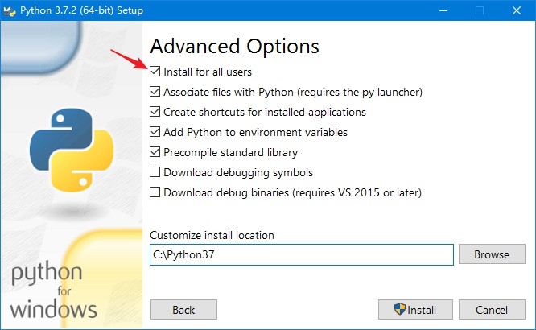
打开命令提示符运行python --version检查是否安装成功.
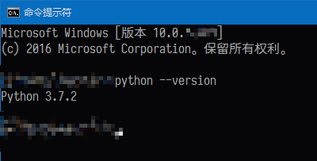
Windows 版本的 Python 可执行程序使用 Visual C++ 编译, 需要 vc 运行库的支持, >>> 点击下载 <<<.
脚本运行方法: (假设文件名为 xxx.py)
用专业的文本编辑器/集成开发环境点击菜单调试运行. (推荐)
如果启用了文件关联, 直接双击脚本文件即可运行.
打开"命令提示符", 切换到脚本所在目录, 运行python xxx.py.
可以直接在脚本所在目录按住"Shift"并右键选择"在此处打开命令窗口".
对于便携版/多版本共存/其他解释器的用户, 使用绝对路径来运行指定的 Python 解释器.
正常情况下在命令界面按 Ctrl + C 即可结束脚本运行, 如果无法终止则去任务管理器里找到对应的 Python.exe 进程杀掉.
推荐几个在线教程网站:
需要学习了解的内容主要包括:
在命令提示符下运行 pip install pvz 来安装本框架.
运行 pip list 来检查已安装的包, 若显示有 pvz 则安装成功.
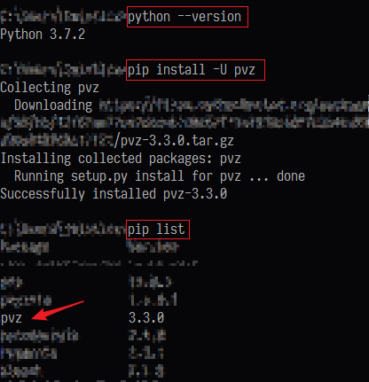
脚本框架可能会有后续更新, 可通过运行 pip install --upgrade pvz 进行升级.
编写代码最好是用专业的文本编辑器.
Notepad++ 免费小巧
Sublime Text 3 轻量快速, 收费软件
Visual Studio Code 功能丰富, 墙裂推荐
Vim 编辑器之神, 过于专业不推荐
Emacs 神之编辑器, 过于专业不推荐
PyCharm 成熟好用, Python 专用, 社区版免费
Visual Studio 2017 宇宙最强 IDE, 过于庞大不推荐
由于某些原因 不建议用记事本!!!
这里墙裂推荐 >>> Visual Studio Code <<<, 安装后在 "拓展" 页面搜索 "Chinese" 中文语言包.
推荐使用 OBS Studio.
>>> 点击下载 <<<
设置视频:
分辨率设置成和游戏一样的 800x600, 帧率 30(常用) 或者 60(流畅).
如需捕获全屏则把分辨率设置成和当前显示器一致, 例如 1920x1080. (全屏捕获会消耗较多资源对电脑配置要求较高, 建议只捕捉游戏窗口.)
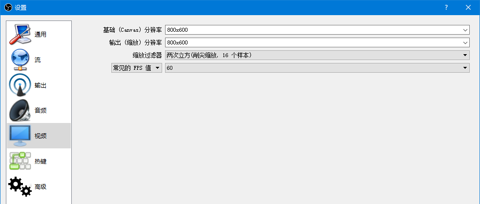
设置音频:
启用一个桌面音频设备 "默认", 默认捕捉扬声器输出, 戴耳机则是捕捉耳机输出.
需要录制麦克风的话在 麦克风/辅助音频设备 里选上要录的音频来源.
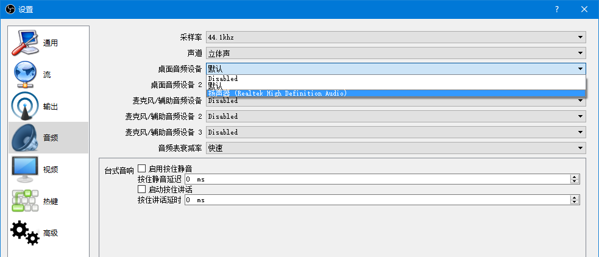
设置输出:
推流的码率和编码器.
录像的输出路径和质量.
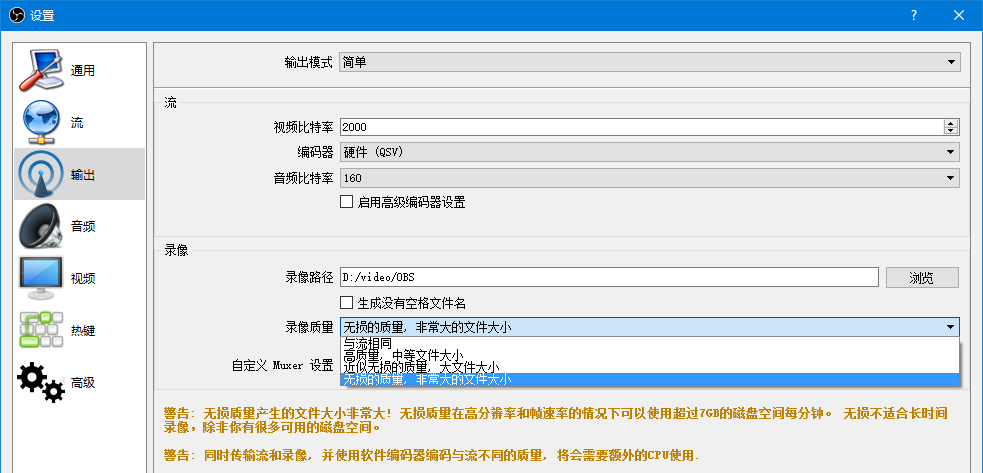
新建一个场景
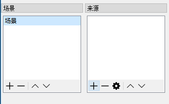
来源里点加号新建一个 "游戏捕获" 或者 "窗口捕获"
取个名字比如 "PVZ", 窗口里选游戏标题.
显示游戏画面即是捕获成功了, 确定. (捕获失败可以尝试用不同的显卡运行 OBS.)
两个开关分别是显示和锁定.
可以捕获多个不同的输入来源, 并且调整它们的显示与否和图层位置.
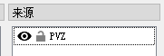
在主界面空白的地方右键开启或者关闭预览.
在没锁定的情况下可以在预览区拖动红色边框调整画面的位置和大小.
之前已经把背景设置成了 800x600, 游戏窗口也是这个分辨率, 因此能按一比一的比例正好填充.
然后点右下角的开始录制就能录视频啦~~~
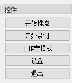
关于直播:
开播后找到推流地址和直播码.
设置流类型为自定义, 填上刚刚获取的地址和直播码.
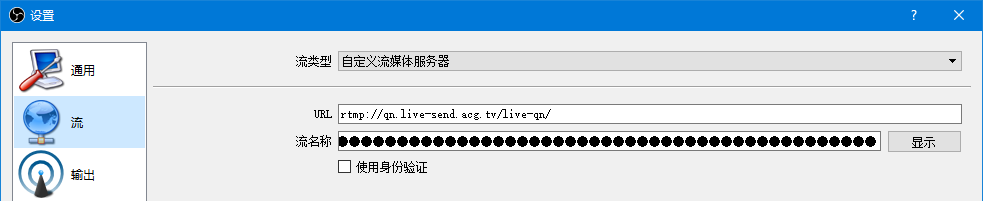
设置下推流码率和编码器.
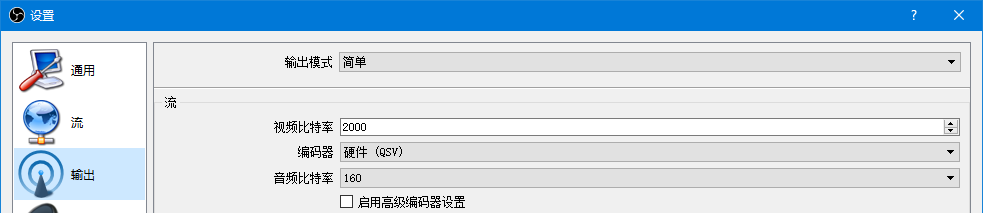
确定保存后点右下角的开始推流.
推荐使用 FFGUI.
>>> 点击下载 <<<

视频压制的目的通常是在保证画质的前提下尽量减小文件体积.
点击 "打开" 选择视频源文件, 设置各种输出文件参数, (修改输出路径后)点击 "执行" 开始压制.
单独勾选 视频/音频 的 "启用" 选项框可以分离 视频/音频. 视频/音频 编码器选择 copy 时不做处理直接复制源文件的内容.
本软件支持的视频封装格式包括 flv mp4 avi mov mkv, 音频格式包括 aac mp3.
x264 有两种常用码率控制模式 crf 和 2pass. crf 模式根据片子质量自动分配码率的vbr码率控制方式, 一遍编码. 无法得知成品的最终码率. 可用的值从 1 到 51, 越小编码质量越好, 码率越高. 默认 23, 可为浮点数, 一般用 18-27. 2pass 模式可以精确的得到想要的平均码率, 需要做两次编码. 第一遍编码 x264 先分析全片生成中间文件, 第二遍编码以临时文件作参考分配合理的码率. 需要特定的平均码率或文件大小时一定要用 2pass 编码.
预设 preset 的值包括 ultrafast superfast veryfast faster fast medium slow slower veryslow placebo. 编码速度从快到慢, 压缩效率由低到高. 码率相同时编码速度越快画质会相应地变差. 应该设置为所能接受的最慢一个, 常用 veryslow. 嫌慢的话可以下调到 slower slow 或者 medium.
视频是由连续的图片构成的, 每一张图片称为一帧. 图片是由一个个像素点构成的, 视频的分辨率就是每一帧图片的分辨率. 分辨率越大视频的画面大小越大. 压制时分辨率应该设置为和原视频相同或者等比例缩放, 例如 800x600 可以拉伸为 480x360 或者 960x720 或者 1440x1080.
视频每一秒闪过的图片数量称为这个视频的帧率. 常见的帧率有 24, 30, 60 等等. 帧率越高视频看上去越流畅. 压制时帧率应该设置为和原视频相同.
单位时间内用来记录视频的数据量称为码率, 视频的平均码率即文件总体积除以总时长. (相同时长下)码率越高的视频用来记录视频的数据量越多, 一般可以理解成视频画质越好. (用低码率视频压制成高码率视频填充的是垃圾数据, 并不能提升画质.)
目前哔哩哔哩的清晰度根据 分辨率/码率/帧率 分为以下几档:
(1080P+/720P60/1080P60 只有大会员用户才能观看.)
1080P60 6000 60
720P60 3000 60
1080P+ 6000 30
1080P 3000 30
720P 2000 30
480P 900 30
360P 400 30
对于 pvz 视频的建议最高码率:
720P (800x600 960x720): 2000kbps(30fps) 3000kbps(60fps)
1080P (1440x1080): 6000kbps(30/60fps)
关于音频:
编码常用 aac.
码率越高越好, 建议 128~256 kbps.
频率 44100 或者 48000, 尽量和源文件相同.
声道立体声 (2 个声道).
以下默认时间单位 cs(厘秒), 空间单位 px(像素), 血量单位 HP.
以下只讨论 PC 原版(1.0.0.1051)在获得金向日葵, 解锁生存无尽模式, 买齐所有紫卡植物/模仿者/坚果修复术, 买齐 10 格卡槽, 完成阵型布置之后, 不使用修改器完成生存无尽后期阵型运转.
持续存在的植物布置构成阵型, 在游戏设定框架内能够有效处理所有僵尸组合并且保持阵型完整的操作称为阵解. 非极限阵在冲关过程中保证阳光不减或者动态平衡.
阵型布置可借助修改器完成, 无需手动开局. 阵型运转可借助半自动化脚本, 再辅助以手动操作.
阵型和操作密不可分. 目前还不存在(可以预见的未来也不会有)(在战斗界面)无需任何操作实现挂机无尽的阵型.
模仿者变身的植物都是白色, 阵型布置使用白色植物多是出于美观因素. (选卡使用模仿者则是变相减少该卡片的冷却时间.)
植物种在草地花盆上没有实质作用. 无论有没有花盆花盆上植物的判定范围都不会变(只是贴图位置变高). 相比于花盆上面的永久植物消失而被破阵的代价来说, 花盆被多啃几口拖点时间这点好处几乎没有意义.
玉米炮的右判定相比前轮的花盆/睡莲要偏左(10px), 因此可以通过投石车/冰车/小丑僵尸碾压/炸掉的方法来实现玉米炮前轮悬空, 同样无实质作用.
南瓜的判定范围相比其内的植物偏右(30px), 南瓜壳被砸/碾时其内植物会被一起压扁, 可通过临时铲除南瓜壳骗击巨人/避免过早被碾.
在合适的时机生效冰蘑菇可以消除最后一大波水池的三只缠绕着珊瑚的僵尸上浮, 即冰消珊瑚. 释放咖啡豆的时机约为红字出现后玉米炮闪 6~8 下, 冰消屋顶空降三人组的时机相同.
通过临时铲除攻击植物/大蒜变道/厚血僵尸做盾等方法引导梯子僵尸靠近南瓜并将梯子搭在南瓜上构成梯子南瓜, 即搭梯. 作用是保护梯子南瓜里的植物, 实现南瓜和植物无伤, 减小经济压力.
可无尽的阵型都有就算不存在小推车救场也不会让僵尸进家的能力, 为了避免出现触发小推车这种尴尬情况的出现一般会在布阵的时候就把小推车去掉.
春哥为玉米加农炮, 曾哥为忧郁蘑菇, 都是纯爷们以及神一般的存在. 因为春哥粉丝称为玉米, 曾哥表情和博客底部图片神似忧郁菇而得名.
无尽新手阵型, 具体玩法和植物布置原理请玩家自行探索.
游戏内置函数 0x00425840 生成出怪类型, 结果位于 [[[6a9ec0] +768] +54d4] 开始的连续 33 个 bool 类型的地址.
游戏内置函数 0x004092e0 从出怪类型生成出怪列表, 结果位于 [[[6a9ec0] +768] +6b4] 开始的连续 1000 个 int_32 类型的地址.
无尽后期(大约 80flags 之后)每轮总共 1000 只僵尸, 每波 50 只(伴舞小鬼除外), 每次选卡 20 波, 按列表顺序刷出.
以下简述从出怪种子到出怪类型的算法:
:begin
设定出普僵.
合成 MT19937 随机数算法所需要的种子, 由以下几个数值相加, 若算出的种子为 0 则重置为 0x1105.
[[[6a9ec0] +82c] +20] // 用户序号
[[6a9ec0] +7f8] // 当前模式
[[[[6a9ec0] +768] +160] +6c] * 65 // 当前轮数乘以 101
[[[6a9ec0] +768] +561c] // 开局时生成的一个随机数
产生一个 0~4 的随机数, 等于 0 则出报纸, 否则出路障.
设定剩余出怪类型数为 min{当前轮数 + 1, 9}. (第一次选卡轮数为 0.)
生成 0~32 的随机数(僵尸类型代号), 符合下列任一条件则重新生成, 设定要出最终得到的类型僵尸.
已设定出该类型僵尸.
非泳池/浓雾场景的潜水/海豚.
屋顶/月夜场景的舞王/矿工.
夜晚场景的冰车.
轮数小于 2 时的白眼/冰车.
轮数小于 5 时的红眼.
伴舞/鸭子/雪人/雪橇/小鬼.
豌豆/坚果/辣椒/机枪/窝瓜/高坚果僵尸.
重复上一步骤直到已设定的僵尸类型数等于剩余出怪类型数.
:end
旗帜/僵博即使设定也不会出现在出怪列表, 因此后期实际出现的僵尸类型总数为 9~11.
使用修改器调节出怪时所选择的僵尸种类数为 8~12 种比较合理.
设可出怪类型数是 m, 剩余出怪类型数是 n:
普僵/路障/读报/其他僵尸出现的概率分别为 1, 0.8+0.2*n/m, 0.2+0.8*n/m, n/m.
僵尸类型总数为 9/10/11 的概率分别为 n*(n-1)/(m*(m-1)), n*(m-n)*2/(m*(m-1)), (m-n)*(m-n-1)/(m*(m-1)).
普僵必出, 路障/报纸必出一种, 伴舞/鸭子/雪人/雪橇/小鬼不出, 豌豆/坚果/辣椒/机枪/窝瓜/高坚果僵尸不出, 白天/黑夜/屋顶/月夜不出潜水/海豚, 黑夜不出冰车, 屋顶/月夜不出舞王/矿工.
六大场地的 m 取值分别为 18/17/20/20/16/16, n 从第九次选卡开始取值为 9. 可得如下表格:
| \ | 普僵 | 路障 | 读报 | 其他 |
|---|---|---|---|---|
| 白天 | 1 | 90.00% | 60.00% | 50.00% |
| 黑夜 | 1 | 90.59% | 62.35% | 52.94% |
| 泳池 | 1 | 89.00% | 56.00% | 45.00% |
| 浓雾 | 1 | 89.00% | 56.00% | 45.00% |
| 屋顶 | 1 | 91.25% | 65.00% | 56.25% |
| 月夜 | 1 | 91.25% | 65.00% | 56.25% |
| \ | 9 种 | 10 种 | 11 种 |
|---|---|---|---|
| 白天 | 23.53% | 52.94% | 23.53% |
| 黑夜 | 26.47% | 52.94% | 20.59% |
| 泳池 | 18.95% | 52.11% | 28.95% |
| 浓雾 | 18.95% | 52.11% | 28.95% |
| 屋顶 | 30.00% | 52.50% | 17.50% |
| 月夜 | 30.00% | 52.50% | 17.50% |
每次选卡(一轮) 20 波僵尸, 上半场 9 波, 下半场 10 波, 关底 1 波. 第 10/20 波称为大波(旗帜波).
除第一次选卡外刷新倒计时开场均为 600 (第一次选卡为 1800), 开场后从 599 正常减少至 1 再刷出第一波.
第 9/19 波(旗帜波前一波)刷新时, 倒计时被设置为 4500 并正常减少, 倒计时初始值与当前倒计时的差值大于 400 (即本波刷出至少 401cs)并且倒计时大于 200 时将本波僵尸(除伴舞)全部消灭则倒计时立即被设置为 200. 倒计时减少至 5 时显示红字, 在 5 停留 25cs 在 4 停留 725cs, 由红字倒计时代替该值从 750 减少, 即倒计时减少至 5 之后 750cs(减少至 4 之后 725cs)刷出下一波. (视觉红字约在刷出前 85cs 消失.)
第 20 波(最后一波)刷新时, 倒计时被设置为 5500, 减少至 0 时激活白字, 刷出后将场上僵尸全部消灭则立即停止倒计时并激活白字. 白字显示 500cs 后结束本次选卡并将倒计时重置为 600.
此外每波僵尸刷新时倒计时被设置为 2500 + rand(600), 减少至 1 后刷出下一波. 同时确定的还有刷新激活(触发/临界)血量, 为本波总血量的 0.50~0.65 倍. 在本波刷出至少 401cs 并且倒计时减少至 200 前, 若本波僵尸总血量小于等于刷新激活血量, 则刷新倒计时被设置为 200, 即激活刷新 200cs 后刷出下一波. (相邻两波僵尸的刷新间隔不小于 601cs, 即自然上限.)
本波僵尸总血量计算方式为: (除被魅惑/已不存在/消失状态/变黑状态/秒杀状态/蹦极之外僵尸的)本体血量 + I 类饰品(路障/铁桶/橄榄球帽/雪橇车/气球/矿工帽/僵尸坚果/僵尸高坚果)血量 + 0.20 * II 类饰品(报纸/铁栅门/扶梯)血量.
一次选卡总时长:
每波僵尸刷新即消灭: 599+(401+200)*17+(401+200-5+750)*2+1+500 = 14009 (cs)
P6 第 9/19/20 波拖够时间: 599+(401+200)*17+(4500-5+750)*2+5500+500 = 27306 (cs)
全程 ch4 并拖够时间: 599+(401+200)*2+1800*15+(4500-5+750)*2+5500+500 = 45291 (cs)
相关内存地址:
6A9EC0
├┬768
│├―5564 // 本轮总波数
│├―5568 // 游戏时钟
│├―556C // 游戏时钟(包括选卡时)
│├―557C // 已刷新波数
│├―5594 // 刷新触发血量
│├―5598 // 本波总血量
│├―559C // 刷新倒计时
│├―55A0 // 刷新倒计时初始值
│├―55A4 // 旗帜波刷新倒计时
同样的自然输出的情况下出怪有无巨人时的刷新速度不同, 因此可以分为慢速关和快速关. 自然出怪下很容易出现第 10 波之后某波突然不出红眼的情况, 亦即变速关.
录制表演视频时会使用修改器调出全难度出怪组合(对阵型有威胁的僵尸), 通常都是慢速(极限全红, 修改器均匀填充使每波都有红眼).
自然出怪下旗帜波红眼密度较大(约为其他波次的 3.5 倍), 部分僵尸出生点右移, 通常采用推迟玉米炮发射时机以及补加运算量的方法来避免刷怪延迟.
六大场地及特性:
白天/白昼(Day), 黑夜(Night), 泳池(Pool), 浓雾(Fog), 屋顶(Roof), 月夜(Moon).
对应的六大场地无尽模式(Survival: Endless)简称为: DE, NE, PE, FE, RE, ME.
除泳池无尽外其他场地无尽需要通过混乱进入. 先进入对应场地的 生存困难/隐藏无尽/僵王的复仇 模式再混乱到(修改器混乱/改存档编号) 泳池无尽 模式.
DE/PE/RE 白天有天降阳光, 掉落间隔 = min{已掉落阳光数量 x 10 + 425, 950} + rand(0, 275), 开局掉落较快, 掉落 52 个之后稳定在 950~1225.
NE/FE/ME 夜间蘑菇无须唤醒.
DE/NE 舞王只在 2/3/4 路出现.
NE 无冰车, 关底前五列冒出一块墓碑, 每块墓碑冒出一只普僵/路障. 场上最多 12 块墓碑, 墓碑未满且前场没空位则顶掉植物(玉米炮顶掉前轮不受影响, 即"压碑").
PE/FE 3/4 路有水池, 水路植物需要种植在睡莲上, 有鸭子潜水海豚, 关底水路前四列出现珊瑚三人组(普僵/路障/铁桶).
FE 前场有浓雾, 可用三叶草临时吹走或者灯笼(火树)照亮.
RE/ME 后场倾斜, 植物需要种植在花盆上, 无矿工舞王, 存在上界之风, 关底前五列出现空降三人组(普僵/路障/铁桶).
上界之风: 疑似游戏 bug, 屋顶场景底线玉米炮打不准, 只能炸两行的一般僵尸，以及三行的巨人小鬼冰车气球.
坐标表示:
横行九格称为 行 或者 路. DE/NE/RE/ME 场地共有五路, PE/FE 场地共有六路. 从上到下称为 1/2/3/4/5(/6) 路.
六行场地 1/6 路称为边路, 2/5 路称为岸路, 3/4 路称为水路, 1/2/5/6 路称为陆路.
竖列五/六格称为 列. 从左到右称为 1/2/3/4/5/6/7/8/9 列.
格子坐标用其所在的路和列来表示, 比如 2-3 (2, 3) 均为二路三列.
游戏分辨率为 800x600, 左上角坐标 (0, 0), 右下角 (799, 599).
每个格子宽度 80, DE/NE 格子高度 100, PE/FE/RE/ME 格子高度 85.
从 路数列数 r-c 到 像素坐标 x-y 的转换时为了精确路数列数可以用小数. (最终得到的像素坐标必须取整处理.)
参考转换过程:
# PE/FE
x = 80 * c
y = 55 + 85 * r
# RE/ME
x = 80 * c
if c >= 6:
y = 45 + 85 * r
else:
y = 45 + 85 * r + 20 * (6 - c)
# 其他
x = 80 * c
y = 40 + 100 * r
卡片(种子包)相关数据:
玉米炮种下后 625 可用, 发射到分离 205, 发射到命中 373, 冷却时间 3475.
屋顶落点位于前场(7~9 列)时 1~7 列(左轮坐标)玉米炮的飞行时间分别为 359 362 364 367 369 372 373.
咖啡豆种下到开始唤醒 100, 种下到完成唤醒 198.
核蘑菇/冰蘑菇/樱桃/辣椒 种下到生效 100.
冰蘑菇首次冻结 400~600, 多次冻结 300~400, 冻结加减速 2000, 冻结水面和云朵 300. 减速效果 50%(部分僵尸 40%), 附带 20 HP 攻击.
倭瓜瞪眼到起跳 126, 瞪眼到生效 181.
垫材常用 CD 750 的植物(花盆/胆小菇/阳光菇/小喷菇).
土豆准备时间 1500, 破土用时 106.
核蘑菇/冰蘑菇/樱桃/辣椒 CD 5000, 土豆/倭瓜 CD 3000.
灰烬生效期间可被小丑炸掉/巨人敲击引爆/两车碾压引爆.
南瓜/坚果/高坚果 CD 3000, 可使用坚果修复术不铲除直接更新处于破损状态的植物.
模仿者变身 320.
向日葵种下(升级为双子向日葵) 300~1250 后首次生产阳光, 生产间隔 2350~2500.
HP: 坚果/南瓜 4000, 高坚果 8000, 大蒜 400, 地刺王 450, 其余植物 300.
种植坐标偏移 (x, y): 小喷菇/海蘑菇 (-5~+4, -3~+2), 阳光菇 (-5~+4, -5~+4).
冷却时间为 750/3000/5000 的卡片开局冷却时间为 0/2000/3500.
僵尸相关数据:
撑杆入场较晚(贴图左对齐), 刷新后 358 完全进入可伤害域(等效 15 预判炮). 对超前置炮最早 607 开始跳跃, 跳跃用时 180. 跳跃后 70 啃普通植物, 113 啃炮.
舞王滑步 300~311, 最早的刚好不能开始召唤伴舞的时间, 超前置炮存在时约为 318(等效 55 预判炮), 超前置炮不存在时约为 340(等效 33 预判炮). 可在刷新后 175 垫舞王.
潜水最早能够对 9 列植物造成伤害 300(等效 73 预判炮).
海豚最早跳过 8 列啃食 650, 最早跳过 7 列啃食 702.
冰车碾压南瓜/普通植物/玉米炮的时间: 九列 197 317 357, 八列 520 652 698, 七列 892 1052 1108, 六列 1350 1553 1625, 五列 1945 2223 2323.
冰道阻止种植: 九列 740, 八列 1178, 七列 1716, 六列 2443. 冰道持续时间 3000.
小丑生成时开盒倒计时均为偶数, 区间 440~754(早爆, 占 5%) 及 1322~2268(晚爆, 占 95%), 边界值出现频率低, 寒冰菇冻结/黄油定身时倒计时停滞, 开盒到爆炸 40+70.
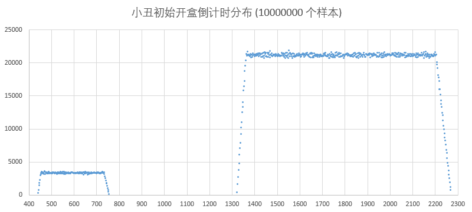
矿工出土到站稳 130, 眩晕时间 350, 出土后开始啃食 1 列植物最早时机 1620.
跳跳运动过程中判定范围随之变化, 因此在炮落点上一行容易漏掉, 尤其是在前院场地.
小偷刷新后最早 375 可受伤害/冻结, 最晚至少 670 时仍可受冻结. 靶子触地到小偷可被攻击 325, 等待 300. 判定范围 1x3, 在两个曾哥的攻击范围内冻住可稳定冰杀. 小偷不会主动偷取场上最后一株阳光植物.
梯子最早开始啃食时机: 九列普通 126, 九列炮 179, 八列普通 358, 超前置炮 370, 七列普通 543, 准超前置 553, 六列普通 726, 前置炮 780, 五列普通 957, 后置炮 974. 梯子从开始放到放下 48.
投篮坐标达到 650 进入可投篮模式, 转把手时间 73, 攻击间隔 300. 对底线植物刷新后 550-560 之间投掷启动, 完美预判冰免疫波长 1975(此数据有误).
白眼血量 3000, 红眼血量 6000. 巨人血量低于一半且横坐标大于 400 时会扔小鬼, 进入伤害域最晚时间为刷新后 218(等效 155 预判炮). 开敲到命中 134, 收手用时 74, 开始扔小鬼到分离 105, 收手用时 37.
巨人对南瓜/普通植物/玉米炮开始举锤的时间: 九列 202 441 468, 八列 732 854 887, 七列 1156 1245 1417, 六列 1573 1811 1844.
小鬼拦截时机为 106~126, 减速则为 210 之后. 平地(非屋顶)玉米炮及樱桃拦截的范围是生效点所在行及其下一行(共两路).
尾炸小鬼原速延时 250, 减速延时 350. (仅供参考, 追求无伤应适当减小. 小鬼落地后大约 25 开啃并非变黑就有伤.)
珊瑚三人组刷新后 200 出现, 50 之后开啃. 水面冻结期间无法出现(冰消珊瑚).
出生点: 旗帜 800, 撑杆 870~879, 冰车 800~809, 投篮 825~834, 巨人 845~854, 雪橇 880~1030, 其他 780~819(旗帜波整体右移 40).
僵尸啃植物 4HP/4cs, 减速 4HP/8cs.
以上数据部分为精确内存数值, 部分为实战测量值, 部分为理论计算值, 可能存在一定偏差.
可无尽的操作都是可循环的, 一个循环里的操作称为节奏, 用指定语言记录的循环操作称为轨道.
P 类循环常用时长 34.75~36s. C 类循环常用时长 50~56s.
用炮操作: P 玉米炮 B 提前炮 S 同步炮 D 延迟炮 d 尾炸炮 p 铲种炮
用卡操作: I 冰蘑菇 N 核蘑菇 A/A'/a 灰烬植物(樱桃/辣椒/倭瓜) C 垫材
"|": 隔离符, 区分对应不同波次僵尸的操作.
"-": 刷新符, 区分同一波次中的过渡和刷新操作.
"/": 分场符, 区分上下半场在同一波次的不同步操作.
括号内的数字: 波长, 本波到下波的刷新间隔.
催化僵尸刷新(灰烬植物)的行为称为 加法操作, 延缓僵尸刷新(冰蘑菇/垫材)的行为称为 减法操作.
刷新时不用冰/立即触发刷新的一波称为 无冰波/加速波, 刷新时用冰减速则称为 冰波/减速波.
代奏: 使用加速卡片起到代替玉米炮的效果.
变奏: 有规律有目的地使用冰蘑菇改变循环的节奏.
双冰变奏: 一个循环用两个冰的节奏.
常用节奏. (不包含过渡冰和激活炸之外的附加轨, 波长单位秒.)
P3: P|P|P, (12|12|12)
P4: P|P|P|P, (9|9|9|9)
P5: P|P|P|P|P, (7|7|7|7|7)
P5u: P|P|P|P|P, (6|6|6|9|9)
P6: P|P|P|P|P|P, (6|6|6|6|6|6)
C2: IN|IAA', (25|25)
C3: N|IN|AA'a, (17|17|17)
ch4: I-P|I-P, (18|18)
ch5: I-P|I-P|P, (15|15|6)
ch6: I-P|P|I-P|P, (12|6|12|6)
ch7: I-P|I-P|N|A|P, (18|18|6|6|6)
ch8: I-P|I-P|P|N|A|P, (15|15|6|6|6|6)
ch9: I-P|P|I-P|P|N|A|P, (12|6|12|6|6|6|6)
ch4u: I-P|I-P, (16|19)
ch5u: I-P|I-P|P, (14|16|6)
C4u-36s: I-P|P|P, (18|9|9)
C5u-36s: I-P|P|P|P, (18|6|6|6)
C5u-50s: I-P|I-P|N, (21|21|8)
C6u-36s: I-P|P|P|P|P, (12|6|6|6|6)
C6u: I-P|I-P|N|P, (18|18|9|9)
C7u(邻): I-P|I-P|P|N|P, (17|17|6|6|6)
C7u(间): I-P|P|I-P|N|P, (17|6|17|6|6)
C8u(邻): I-P|I-P|P|P|N|P, (13|13|6|6|6|6)
C8u(间): I-P|P|I-P|P|N|P, (13|6|13|6|6|6)
C8u(对): I-P|P|P|I-P|N|P, (13|6|6|13|6|6)
C6i-36s: I-P|I-P|I-P, (12|12|12)
C7i: I-P|I-P|I-N|P, (18|18|12|6)
C8i-48s: I-P|I-P|I-P|N|P, (12|12|12|6|6)
C9i(ch6): I-P|P|I-P|P|I-P|P, (12|6|12|6|12|6)
常用复合运算:
IP-: 热过渡, 刷新后冰生效并炸掉矿工冰车, 几乎不会触发刷新
PD: D 不早于刷新前 15 收撑杆, 同时补刀红眼
PC: 垫材防撑杆, C 于 P 操作 81 之后种植并尽快铲除
PDC: P 早于刷新前 93, D 延迟 108 拦截小鬼, C 于 P 操作 81 之后种植并尽快铲除
CP: 九列垫舞王, P 不早于刷新前 15 收撑杆
I-CP: 较长冰波垫九列快速僵尸, 保护 78 列炮
P(S)D: P/PS 不早于刷新前 155 全收巨人, 延迟 106~126 拦截小鬼
Pd: 尾炸小鬼, 落点 2.4 列可同时收矿工.
PI (ICE1): 冰减压, 冻住红眼和撑杆
PI (ICE2): 冰同步或者稍早于炮生效, 冻住即将投掷小鬼的巨人于下一波解决
PI (ICE3): 冰延迟 105(减速 210) 生效取消小鬼投掷
PSD: PS 瞬杀白眼并触发红眼投掷, D 拦截小鬼并重复伤害红眼
I-PDD (IP-PD): P 激活炸, D 消灭白眼并调整红眼投掷时机, D 拦截小鬼同时分离下一波冰车矿工
PD (精准之舞): P 刷新前 15 以收撑杆, D 延迟 107 拦截小鬼以及炸未出土的伴舞
I-PD|PD (下半场节奏/连续拦截): P 冰波激活炮, D 延迟 220 落点前移, P 刷新前 135 拦截并触发本波白眼投掷, D 空拦(尾炸)白眼小鬼
PN (ND5): 前院 3 行核蘑菇延迟 106 生效空拦五路小鬼
PCD: C 于 P 生效之前种植, 延缓巨人投掷时间, D 拦截小鬼同时分离下一波快速僵尸
声明文字编码为 UTF-8, 尤其是在内容包括汉字的时候.
注意这里只是声明, 文本编辑器保存文件的时候也需要采用该编码.
# coding=utf-8
导入本项目的基础函数. (三种方式任选其一即可)
# 方式 1
# 调用时需要加上 pvz. 前缀
import pvz
# pvz.Pao((2, 9), (5, 9))
# pvz.Card("小喷", (3, 9))
# 方式 2
# 推荐, 本教程示例均用此种方式
from pvz import *
# Pao((2, 9), (5, 9))
# Card("小喷", (3, 9))
# 方式 3
# 只导入需要的内容, 可给函数取别名
from pvz import Countdown
from pvz import Sleep
from pvz import Pao as 发炮
from pvz import Card as 用卡
# 发炮((2, 9), (5, 9))
# 用卡("小喷", (3, 9))
按需求把一些用卡用炮操作封装成函数: (可选, 非必须, 可以在逐波具体操作中直接调用 Card 和 Pao.)
# 在某行某列释放樱桃
def A(row, col):
Card("樱桃", (row, col))
# 在水路某行某列释放核蘑菇
def N(row, col):
Card("睡莲", (row, col))
Card("核蘑菇", (row, col))
Card("咖啡豆", (row, col))
# 在某行某列释放原版冰
def I(row, col):
Card("原版冰", (row, col))
# 在某行某列释放复制冰
def II(row, col):
Card("复制冰", (row, col))
# 存冰函数在子线程里运行
# 开场后立即运行
# 存冰位 3-1 3-2 3-3 3-4
# 优先存复制冰, 优先存在永久位
# 每 50.1s 存两个冰, 共 10 个
@RunningInThread
def StoreIce():
ice_spots = [(3, 1), (3, 2), (3, 3), (3, 4)]
Countdown(599)
for i in range(5):
MouseLock().acquire()
SafeClick()
ClickSeed("复制冰")
for spot in ice_spots:
ClickGrid(spot)
SafeClick()
ClickSeed("原版冰")
for spot in ice_spots:
ClickGrid(spot)
SafeClick()
MouseLock().release()
if i != (5 - 1):
Delay(5000 + 1)
# 点冰
def UseIce():
ice_spots = [(3, 1), (3, 2), (3, 3), (3, 4)]
MouseLock().acquire()
SafeClick()
ClickSeed("咖啡豆")
for spot in reversed(ice_spots):
ClickGrid(spot)
SafeClick()
MouseLock().release()
# 种垫材后铲除
# 在子线程里运行
@RunningInThread
def DianCai():
Card("阳光菇", (5, 9))
Card("小喷菇", (6, 9))
Delay(30)
Shovel((5, 9))
Shovel((6, 9))
# 吹 10 次风扇
# 在子线程里运行
@RunningInThread
def BloverThread():
for _ in range(10):
Card("三叶草", (1, 1))
Delay(2700)
# 吃墓碑
def EatGrave():
with MouseLock()：
SafeClick()
ClickSeed("墓碑吞噬者")
for r in range(1, 6): # 1~5 路
for c in range(5, 10): # 5~9 列
ClickGrid(r, c)
SafeClick()
# 非旗帜波双边 PSD
def PPSSDD():
Until(-95)
Pao((2, 9), (5, 9), (2, 9), (5, 9))
Delay(110)
Pao((1, 8.8), (5, 8.8))
# 炮数足够的情况下最后一波收尾
# 点炮后延迟 30cs 炸珊瑚
def wave20():
Prejudge(150 - 30, 20)
Pao((4, 7), 30)
Until(-60)
Pao((1, 9), (2, 9), (5, 9), (6, 9))
Delay(108)
Pao((1, 9), (2, 9), (5, 9), (6, 9))
启用一些常用的修改器功能, 比如 后台运行/修改阳光/僵尸不掉钱/清除浓雾/修改出怪 等等.
EnableLogger(False) # 输出调试信息
SetWindowTopMost(True) # 窗口置顶
BackgroundRunning(True) # 允许后台运行
ZombieNoFalling(True) # 僵尸死后不掉钱
ClearFog(True) # 清除浓雾
SetSun(8000) # 阳光 8000
SetMoney(0) # 金钱 0
JumpLevel(int(2018/2)) # 完成 2018 面旗帜数
SetZombies(["普僵", "撑杆", "舞王", "冰车", "海豚", "矿工", "跳跳", "蹦极", "扶梯", "篮球", "白眼", "红眼"])
等待 2 秒钟(启动脚本后给开录像预留时间), 选卡并点击"Let's Rock!".
Sleep(200)
SelectCards(["复制冰", "寒冰菇", "咖啡豆", "樱桃", "坚果", "倭瓜", "花盆", "胆小", "阳光", "小喷"])
启动 自动收集/自动存冰 等线程.
# 收集钻石和阳光, 间隔 0.15s
StartAutoCollectThread([3, 4, 5, 6], 15)
# 往 6-1 5-1 2-1 1-1 累计存 8 个寒冰菇
StartAutoFillIceThread([(6, 1), (5, 1), (2, 1), (1, 1)], 8)
正式编写具体操作.
如果有相当多的波次操作完全相同, 可以用一个循环变量 wave 遍历 1~20, 对应每次选卡共 20 波僵尸的处理, 把相同操作的波次写在同一个分支里.
for wave in range(1, 21):
if wave == 10:
# 第 10 波操作
pass
elif wave == 20:
# 第 20 波操作
pass
elif wave in (1, 3, 5, 7, 9, 12, 14, 16, 18):
# 第 1/3/5/7/9/12/14/16/18 波操作
pass
else:
# 剩余波次操作
pass
不同波次操作几乎都不相同的情况下, 可以逐波写出来. 以下两种推荐写法:
第一种: 直接将每一波的操作逐波写出, 参考示例 FE花环十六炮.
# 第 1 波
Prejudge(-100, 1)
pass
# 第 2 波
Prejudge(-100, 2)
pass
# 第 3 波
Prejudge(-100, 3)
pass
# ...
# ...
# ...
# 第 20 波
Prejudge(-150, 20)
pass
第二种: 给每一波的操作定义一个函数, 相同操作的波次可以合并, 参考示例 FE双冰二十二炮.
注意, 这种写法函数定义内部不能包含 Prejudge 只能用 Until. 需要在每一波函数实际调用之前调用 Prejudge.
# 第 1 波
def wave1():
pass
# 第 2 波
def wave2():
pass
# 第 3 波, 操作同第 1 波
def wave3():
wave1()
# ...
# ...
# ...
# 第 20 波
def wave20():
pass
Prejudge(-200, 1)
wave1()
Prejudge(-200, 2)
wave2()
Prejudge(-200, 3)
wave3()
# ...
Prejudge(-200, 20)
wave20()
对于每一波的处理分为几个部分: 设定预判时间, 执行主要操作, 延时到本波刷新以后(使用Prejudge函数时可省略, 以及注意不要超过下一波的预判时间).
常用预判时间 95cs, 早于 149cs 可能炸不全巨人. 第 10 波部分僵尸出生点偏右, 为避免刷怪延迟因此推迟到 55cs, 再晚可能伴舞会出土, 同时可加上樱核补运算量. 第 20 波预判 150cs 可炮炸珊瑚.
第 9/19 波执行完主要操作后可能还需要额外用炮收尾, 所以要在对应波次的地方跳过一定数量的炮数, 使第 10/20 波自动选择的炮位相应地延后. 当然也可以算好时间写好脚本操作自动收尾.
第 20 波视情况炮炸珊瑚/冰消珊瑚/冰杀小偷/炮炸小偷, 然后手动/脚本收尾.
以泳池场地第 3 波预判 100cs 延迟 85cs 的双边 PD 为例, 以下几种写法均可:
# 1
Countdown(100)
Pao((2, 9))
Pao((5, 9))
Sleep(85)
Pao((2, 9))
Pao((5, 9))
Sleep(15 + 1)
# 2
Countdown(100, 3 % 10 == 0)
Pao((2, 9), (5, 9))
Delay(85)
Pao((2, 9), (5, 9))
Delay(15)
# 3
Prejudge(-100, 3)
Pao((2, 9), (5, 9))
Delay(85)
Pao((2, 9), (5, 9))
# 4
Prejudge(-200, 3)
Until(-100)
Pao([(2, 9), (5, 9)])
Until(-100 + 85)
Pao([(2, 9), (5, 9)])
# 5
# 推荐
Prejudge(-200, 3)
Until(-100)
Pao((2, 9), (5, 9))
Delay(85)
Pao((2, 9), (5, 9))
# 6
# 推荐
def wave3():
Until(-100)
Pao((2, 9), (5, 9))
Until(-100 + 85)
Pao((2, 9), (5, 9))
Prejudge(-200, 3)
wave3()
Countdown 和 Prejudge 的区别Countdown 阻塞到刷新倒计时数值达到指定值, 需要用户保证设定波次的上一波操作运行到上一波刷新之后再进行本波预判. 只能在设定波次刷新前调用. 该函数仅保留兼容传统写法, 已不推荐使用.
Prejudge 参数为相对于本波刷新时间点的相对时间, 用于预判则为负值. 每波在且仅在最开始调用一次, 可自动判断设定波次的上一波有没有刷出. 该函数既可在设定波次刷新前调用也可在刷新后调用.
Sleep 和 Delay 的区别Sleep 借助于操作系统实现延时, 由于 Windows 不是实时操作系统所以实际睡眠时间会有波动.
Delay 靠读取游戏内部时钟来实现延时, 相比线程睡眠更加精确, 也不用担心游戏中途突然暂停的影响.
节奏简式表达的是针对每一波的操作, 理想情况下是把本波的所有操作都写在本波.
然而某些操作离其生效时间较长, 这个时候应该把操作写在上一波. 比如 预判冰点咖啡豆, 预判复制冰 等等.
另外某些操作执行的时候已经到了下一波刷新的时候了, 则写在下一波. 比如 垫撑杆 等等.
Until 的参数为 "与本波刷新时间点的差值", 该函数需要配合 Prejudge 使用.
刷新前 95: -95.
刷新后 180: 180.
刷新后 360 生效炮发射时机: 360 - 373.
白天点下一波预判冰的咖啡豆时机, (假设为加速波)波长 601, 使冰在下一波刷新后 20 生效, 点下咖啡豆到冰生效 298, 计算可得: 601 + 20 - 298.
夜间种植下一波预判复制冰时机, (假设为减速波)波长 1350, 使冰在下一波刷新后 5 生效, 冰种植到生效 100, 模仿者变身耗时 320, 计算可得: 1350 + 5 - 100 - 320.
减速波激活炸时机, 假设波长为 1200, 从加速运算量生效到下一波刷出 200, 玉米炮飞行时间 373, 计算可得: 1200 - 200 - 373.
白天减速波核蘑菇激活点咖啡时机, 假设波长为 1150, 从加速运算量生效到下一波刷出 200, 核蘑菇被唤醒到生效 100, 咖啡豆种下到完成唤醒 198, 计算可得: 1150 - 200 - 100 - 198.
多个 Until 连用以及与 Sleep Delay 混用时, 需要注意把对应的操作按时间顺序(参数大小)排列.
在下面的例子中, 本意是在冰波激活炸之后尾炸小鬼再点下一波的预判冰, 由于尾炸延时较长, 执行尾炸发炮操作时已经超过了本应点预判冰的时机, 脚本逻辑出错.
只要把每个时机的具体数字算出来就能发现问题所在了, 将时机(和对应的操作)按照大小顺序排序即可解决.
# 错误示范
# 727 < 1077 < 1022 (✗)
Until(1300 - 200 - 373) # 727
Pao((2, 8.8), (5, 8.8)) # 冰波激活炸
Delay(350) # 1077
Pao((1, 2.4), (5, 2.4)) # 减速尾炸
Until(1300 + 20 - 298) # 1022
Coffee() # 20cs 预判冰
# 正确示范
# 727 < 1022 < 1077 (✓)
Until(1300 - 200 - 373) # 727
Pao((2, 8.8), (5, 8.8)) # 冰波激活炸
Until(1300 + 20 - 298) # 1022
Coffee() # 20cs 预判冰
Delay(350) # 1077
Pao((1, 2.4), (5, 2.4)) # 减速尾炸
Coffee 需要与 StartAutoFillIceThread 配合使用. 为了减少资源占用该函数存冰并不及时, 需要更精确的控制存冰时间可参考 StoreIce 和 UseIce 示例自己实现存冰和点冰函数.
RunningInThread 的异步功能是靠开新线程实现的, 建议只在精度要求不高(电脑配置很好)的情况下使用. 注意这并不是一个普通的函数, 而是一个装饰器. 定义一个函数然后用这个装饰器装饰, 该函数在调用的时候会运行在单独的线程当中.
建议把一些与主线程操作关系不大的操作放在子线程里, 比如 自动存冰, 补南瓜, 铲种垫材 等等.
炮落点位于自身附近快速点击无法发射的解决方法:
开场不使用脚本自动找炮, 而是用 UpdatePaoList() 函数手动调整玉米炮列表顺序.
发射单门炮且操作前 30cs 内无其他操作时可提前并设置额外的延时发射参数(主线程后续计算累积延时时要加上此延时).
Pao((4, 7)) -> Pao((4, 7), 30)
Pao((1, 8), (5, 8)) -> Pao((5, 8), (1, 8))
众所周知, 鼠标只有一个.
脚本为了方便使用了多线程技术, 为了避免(脚本不同操作之间以及键控与手控之间的)冲突, 在进行不可中断的操作的时候, 需要通过内置唯一鼠标锁获取操作权, 操作完毕后再释放.
本框架封装的高级函数 (Card Shovel Pao TryPao RoofPao StartAutoCollectThread StartAutoFillIceThread Coffee) 均有使用鼠标锁, 使用的时候无需担心冲突.
但是在使用基础点击函数 (LeftClick RightClick ButtonClick SafeClick ClickSeed ClickShovel ClickGrid) 构建自定义操作的时候, 为了脚本的可靠性建议加锁.
在调试脚本的时候可以把选卡函数注释掉, 手工选卡进入游戏场景然后退回主界面, 找到存档位置设置存档只读. 这样每次调试的时候是直接从选完卡后开始, 省去重新选卡和切换画面的时间.
同样可以在积累了一定工作量(比如上半场前九波完成)之后存个档, 注释掉前面已完成的代码(跳过一定炮数并从第10波开始)再继续之后步骤的编写调试. 等到全部完成后再从选卡阶段录制完整的表演视频.
具体操作参考视频 《脚本大战僵尸》键控教程.
举个栗子:
手动选卡, 开场即退出, 设置存档只读, 编写调试前 9 波.
# 这里注释掉了选卡函数
# 从第 1 波开始操作
# SelectCards(cards)
for wave in range(1, 21):
pass
第 10 波刷新前取消存档只读, 退回游戏主菜单, 再次设置存档只读, 跳过一定炮数, 编写调试第 10~19(20) 波.
# 这里注释掉了选卡函数
# 按顺序跳过了一定炮数
# 从第 10 波开始操作
# SelectCards(cards)
SkipPao(x)
for wave in range(10, 21):
pass
待脚本编写完成后用未选完卡的存档重新开始.
# 这里启用了选卡函数
# 从头开始运行完整的操作
SelectCards(cards)
for wave in range(1, 21):
pass
以下部分脚本后期有更新, 可能会出现脚本代码和视频内容不一致的情况.
部分脚本操作细节优化来自于冰巫师墨舞, 特此表示感谢!
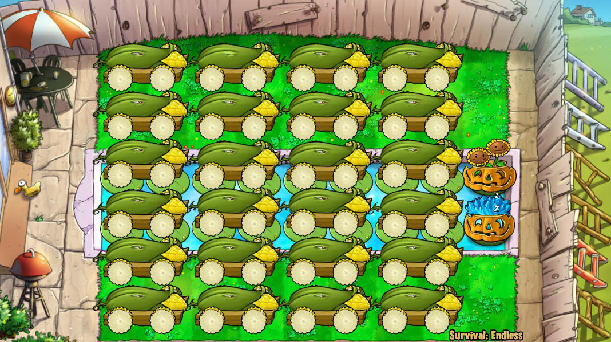
# coding=utf-8
"""
作者: lmintlcx
日期: 2019-03-14
阵名: PE二十四炮
出处: https://tieba.baidu.com/p/991306518
节奏: P6: PPDD|PPI|PPSSDD|PPDD|PPI|PPSSDD
视频:
- https://www.bilibili.com/video/av38400974
- https://www.youtube.com/watch?v=88S5vZjfg5I
"""
from pvz import *
# EnableLogger(False) # 输出调试信息
# SetWindowTopMost(True) # 窗口置顶
# BackgroundRunning(True) # 允许后台运行
# ZombieNoFalling(True) # 僵尸死后不掉钱
# SetSun(8000) # 阳光 8000
# SetMoney(0) # 金钱 0
# JumpLevel(1009) # 完成 2018 面旗帜数
SetZombies(["普僵", "撑杆", "舞王", "冰车", "海豚", "矿工", "跳跳", "蹦极", "扶梯", "篮球", "白眼", "红眼"])
Sleep(200)
SelectCards(["复制冰", "寒冰菇", "咖啡豆", "南瓜", "坚果", "窝瓜", "花盆", "胆小", "阳光", "小喷"])
# UpdatePaoList(
# [
# (1, 1), (1, 3), (1, 5), (1, 7),
# (2, 1), (2, 3), (2, 5), (2, 7),
# (3, 1), (3, 3), (3, 5), (3, 7),
# (4, 1), (4, 3), (4, 5), (4, 7),
# (5, 1), (5, 3), (5, 5), (5, 7),
# (6, 1), (6, 3), (6, 5), (6, 7),
# ]
# )
# UpdatePaoList([(r, c) for r in range(1, 7) for c in range(1, 8, 2)])
StartAutoCollectThread()
StartAutoFillIceThread([(4, 9)], 6)
for wave in range(1, 21):
print("当前操作波次: " + str(wave))
# 精准之舞 PPDD
if wave in (1, 4, 7, 11, 14, 17):
Prejudge(-15, wave)
Pao((2, 9), (5, 9))
Delay(107)
Pao((1, 7.7), (5, 7.7)) # 7.625
# 冰之旋舞 PPI
elif wave in (2, 5, 8, 12, 15, 18):
Prejudge(-95, wave)
Pao((2, 9), (5, 9))
Delay(373 - 100 - 198) # 冰同步于炮生效
Coffee()
# 六神乱舞 PPSSDD
elif wave in (3, 6, 9, 13, 16, 19):
Prejudge(-95, wave)
Pao((2, 9), (5, 9), (2, 9), (5, 9))
Delay(108)
Pao((1, 8.8), (5, 8.8))
if wave in (9, 19):
Delay(601 + 95 - 108 - 15) # Until(601 - 15)
Pao((2, 9), (5, 9))
# 推迟 PPSSDD
elif wave == 10:
Prejudge(-55, wave)
Pao((2, 9), (5, 9), (2, 9), (5, 9))
Delay(108)
Pao((1, 8.8), (5, 8.8))
elif wave == 20:
Prejudge(-150, wave)
Pao((4, 6), (4, 8)) # 炮炸珊瑚
Delay(90) # Until(-60)
Pao((1, 9), (2, 9), (5, 9), (6, 9))
Delay(108)
Pao((1, 9), (2, 9), (5, 9), (6, 9))
print(f"第 {wave} 波手动收尾.")
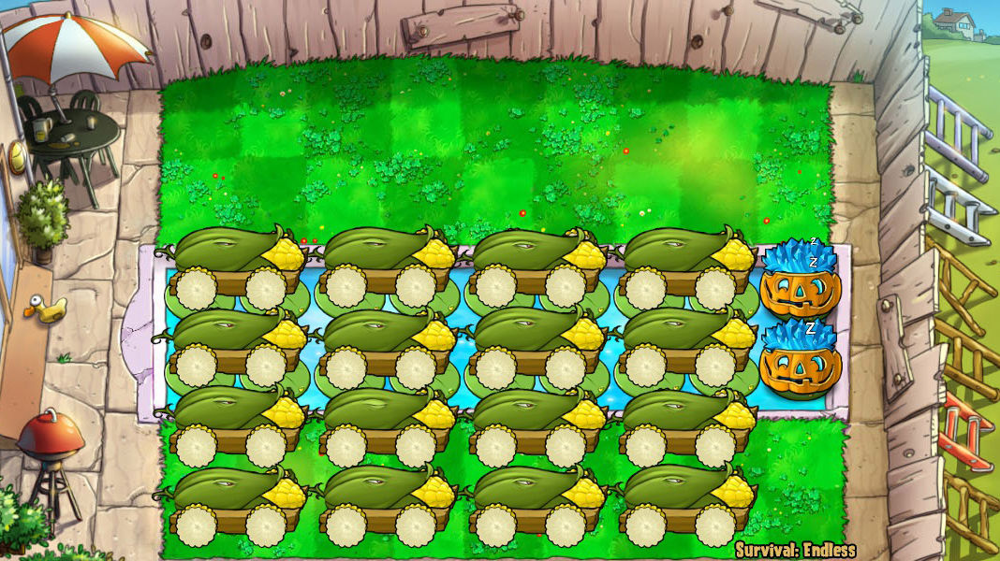
# coding=utf-8
"""
作者: lmintlcx
日期: 2019-03-14
阵名: PE裸奔十六炮
出处: https://tieba.baidu.com/p/1289540813
节奏: ch6: PPDC|IPd-PPD|PPDC|IPd-PPD, (6|12|6|12)
视频:
- https://www.bilibili.com/video/av40496902
- https://www.youtube.com/watch?v=6WUQcO9xaYo
"""
from pvz import *
# 种垫铲垫
@RunningInThread
def DianCai():
Card("小喷菇", (5, 9))
Card("阳光菇", (6, 9))
Delay(100)
Shovel((5, 9))
Shovel((6, 9))
# 偷菜
@RunningInThread
def Sunflower():
sunflower_spots = [(1, 2), (1, 5), (1, 6), (2, 2), (2, 5), (2, 6)]
# 开局种
for spot in sunflower_spots:
Card("向日葵", spot)
Delay(750 + 1)
# 等第 20 波刷新
while CurrentWave() < 20:
Sleep(100)
# 等白字出现
while ReadMemory("int", 0x6A9EC0, 0x768, 0x140, 0x8C) != 12:
Sleep(100)
# 结尾铲
for spot in sunflower_spots:
Shovel(spot)
###
# EnableLogger(False) # 输出调试信息
# SetWindowTopMost(True) # 窗口置顶
# BackgroundRunning(True) # 允许后台运行
# ZombieNoFalling(True) # 僵尸死后不掉钱
# SetSun(8000) # 阳光 8000
# SetMoney(0) # 金钱 0
# JumpLevel(1009) # 完成 2018 面旗帜数
SetZombies(["普僵", "撑杆", "舞王", "冰车", "海豚", "矿工", "跳跳", "蹦极", "扶梯", "篮球", "白眼", "红眼"])
Sleep(200)
SelectCards(["咖啡豆", "寒冰菇", "复制冰", "樱桃", "窝瓜", "南瓜头", "向日葵", "胆小菇", "阳光菇", "小喷菇"])
# UpdatePaoList([
# (3, 1), (3, 3), (3, 5), (3, 7),
# (4, 1), (4, 3), (4, 5), (4, 7),
# (5, 1), (5, 3), (5, 5), (5, 7),
# (6, 1), (6, 3), (6, 5), (6, 7),
# ])
StartAutoCollectThread()
StartAutoFillIceThread([(3, 9), (4, 9), (1, 4), (2, 4)], 10)
Sunflower() # 偷菜线程
for wave in range(1, 21):
print("当前操作波次: " + str(wave))
Prejudge(-200, wave) # 每波均用 200 预判
# PPD|I-
if wave in (1, 3, 5, 7, 9, 10, 12, 14, 16, 18):
if wave == 10:
Until(-55)
Pao((2, 9), (5, 9))
Until(-55 + 110)
Pao((5, 8))
Until(601 - 200 - 100) # 301
Card("樱桃", (2, 9)) # 消延迟 炸小偷
else:
Until(-133)
Pao((2, 9), (5, 9))
Until(-133 + 110)
Pao((5, 8))
Until(601 + 50 - 298) # 353
Coffee() # 50cs 预判冰
if wave == 9: # 第 9 波收尾
Until(601 - 135)
DianCai()
Until(601 - 100)
Pao((1, 2.4))
Until(601 + 444 - 373 - 30)
Pao((5, 7.4), 30)
Until(601 + 1200 - 200 - 373)
Pao((2, 9), (5, 9))
Delay(220)
Pao((5, 8.5))
Until(601 + 1200 - 133)
Pao((1, 2.4), (5, 9))
Until(601 + 1200 - 133 + 110)
Pao((2, 9))
Until(601 + 1200 + 601 - 100)
Delay(600)
Pao((2, 8), (5, 9))
Card("小喷菇", (1, 7))
Card("阳光菇", (2, 7))
Delay(400)
Shovel((1, 7), (2, 7))
# C|Pd-PPD
elif wave in (2, 4, 6, 8, 11, 13, 15, 17, 19):
Until(-135)
DianCai()
Until(-100)
if wave == 11:
Pao((1, 4)) # 炸小鬼和小偷
else:
Pao((1, 2.4))
Until(444 - 373 - 30) # 提前 30cs 点炮
Pao((5, 7.4), 30) # 推迟 30cs 发射
Until(1200 - 200 - 373)
Pao((2, 9), (5, 9))
Delay(220)
Pao((5, 8.5))
if wave == 19: # 第 19 波收尾
Until(1200 - 133)
Pao((2, 9), (5, 9))
Delay(350)
Pao((1, 2.4))
Delay(300)
Pao((5, 9))
Delay(400)
Pao((2, 9))
Delay(500)
Pao((5, 9))
Delay(400)
Pao((2, 8))
Card("小喷菇", (1, 7))
Card("阳光菇", (2, 7))
Delay(400)
Shovel((1, 7), (2, 7))
elif wave == 20:
Until(-150 - 30)
Pao((4, 7), 30) # 点炮后延迟 30cs 炸珊瑚
Until(-60) # 等到刷新前 60cs
Pao((1, 9), (2, 9), (5, 9), (6, 9))
Delay(108)
Pao((1, 9), (2, 9), (5, 9), (6, 9))
Delay(180)
Pao((1, 4)) # 尾炸小偷
print(f"第 {wave} 波手动收尾.")
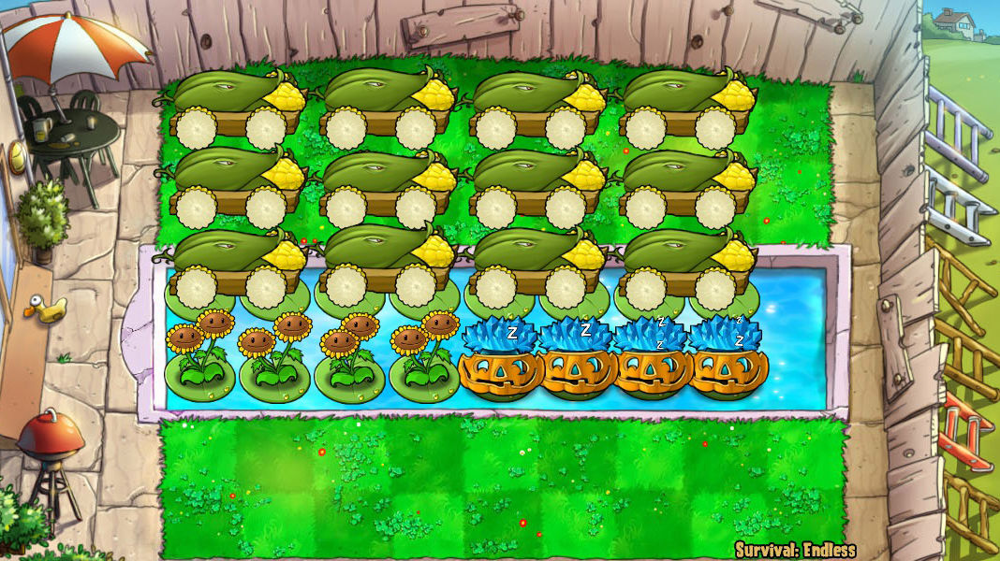
# coding=utf-8
"""
作者: lmintlcx
日期: 2019-03-14
阵名: PE半场十二炮
出处: https://tieba.baidu.com/p/1801759994
节奏: ch4: I+BC/d-PDD/P|I+BC/d-PDD/P, (18|18)
视频:
- https://www.bilibili.com/video/av40880422
- https://www.youtube.com/watch?v=MvKZKGRMwoU
"""
from pvz import *
# 种垫铲垫
@RunningInThread
def DianCai():
Card("小喷", (1, 9))
Card("阳光", (2, 9))
Delay(100)
Shovel((1, 9))
Shovel((2, 9))
# 烧小偷
@RunningInThread
def 口吐金蛇():
# 等第 10 波刷新
while CurrentWave() < 10:
Sleep(1)
Delay(400)
Card("睡莲", (4, 9))
Card("辣椒", (4, 9))
Delay(100 + 1)
Shovel((4, 9))
# 等第 20 波刷新
while CurrentWave() < 20:
Sleep(1)
Delay(400)
Card("睡莲", (4, 9))
Card("辣椒", (4, 9))
Delay(100 + 1)
Shovel((4, 9))
###
# EnableLogger(False) # 输出调试信息
# SetWindowTopMost(True) # 窗口置顶
# BackgroundRunning(True) # 允许后台运行
# ZombieNoFalling(True) # 僵尸死后不掉钱
# SetSun(8000) # 阳光 8000
# SetMoney(0) # 金钱 0
# JumpLevel(1009) # 完成 2018 面旗帜数
SetZombies(["普僵", "撑杆", "舞王", "冰车", "海豚", "矿工", "跳跳", "蹦极", "扶梯", "篮球", "白眼", "红眼"])
Sleep(200)
SelectCards(["白冰", "冰菇", "咖啡", "荷叶", "南瓜", "樱桃", "辣椒", "倭瓜", "阳光", "小喷"])
UpdatePaoList([
(1, 3), (2, 3), (3, 3),
(1, 5), (2, 5), (3, 5),
(1, 7), (2, 7), (3, 7),
(1, 1), (2, 1), (3, 1),
])
while GameUI() != 3:
Sleep(1)
while GamePaused():
Sleep(1)
Card("寒冰菇", (5, 5)) # 临时存冰
Card("睡莲", (3, 9)) # 临时存冰位
Card("南瓜头", (3, 9)) # 其实不需要
StartAutoCollectThread()
StartAutoFillIceThread([(4, 5), (4, 6), (4, 7), (4, 8), (3, 9)], 17 - 1)
StartNutsFixerThread([(4, 5), (4, 6), (4, 7), (4, 8)], "南瓜头")
口吐金蛇() # 这什么鬼函数名
for wave in range(1, 21):
print("当前操作波次: " + str(wave))
Prejudge(-200, wave)
if wave in (1, 10):
Until(-95)
Pao((1, 9))
Until(-15)
Pao((2, 9), (5, 9))
Until(-15 + 110)
Pao((5, 7.7))
Until(-15 + 110 + 373 - 100) # 368
Card("樱桃", (1, 9))
elif wave == 20:
Until(-150 - 30)
Pao((4, 7), 30)
Until(-60) # 等到刷新前 60cs
Pao((2, 9), (5, 9), (2, 9), (5, 9))
Until(-60 + 110)
Pao((1, 8.8), (2, 8.8)) # 炮不够 ==
Until(-60 + 110 + 373 - 100)
Card("樱桃", (5, 9))
while not TryPao((5, 8)):
Sleep(1)
print(f"第 {wave} 波手动收尾.")
Until(5500 + 100)
Shovel((3, 9), (3, 9)) # 跳白字后铲掉
else:
Until(-133)
Pao((1, 8.0)) # 拦截上波红眼, 分离部分快速僵尸
Until(360 - 373)
Pao((2, 8.15)) # "无冰分离." ----发出日智的声音
Until(360 - 298) # 360cs 反应冰
Coffee() if wave not in (2,) else Card("咖啡豆", (5, 5))
Until(360 + 500 - 373)
# WZ_PNT = (5, 2.7) if wave in (3, 12) else (5, 3) # 尾炸落点
WZ_PNT = (5, 3)
Pao(WZ_PNT) if wave not in (2, 11) else None # 下半场尾炸
Until(1800 - 200 - 373)
Pao((2, 9), (5, 8.1)) # 激活炸
Delay(10)
DianCai() # 垫撑杆
Until(1800 - 200 - 373 + 220)
Pao((1, 8.2)) # 秒白眼, 触发红眼投掷
if wave in (9, 19): # 收尾波次
Until(1800 - 133)
Pao((1, 8.0))
Until(1800 + 360 - 373)
Pao((2, 9))
Until(1800 + 360 + 500 - 373)
Pao((5, 2.5))
Until(1800 + 1800 - 200 - 373)
Pao((5, 6))
Delay(110)
Pao((5, 6))
Delay(110)
Pao((5, 3))
Until(4500 - 200 - 373)
Pao((5, 5))
SkipPao(2) if wave == 9 else None # 中场调整
# coding=utf-8
"""
作者: lmintlcx
日期: 2019-03-14
阵名: PE经典四炮
出处: https://tieba.baidu.com/p/664115150
节奏: C7i: PP|I-PP|I-PP|I-N, (6|18|18|11.5)
视频:
- https://www.bilibili.com/video/av40867249
- https://www.youtube.com/watch?v=LXWdCpY7qSc
"""
from pvz import *
# EnableLogger(False) # 输出调试信息
# SetWindowTopMost(True) # 窗口置顶
# BackgroundRunning(True) # 允许后台运行
# ZombieNoFalling(True) # 僵尸死后不掉钱
# SetSun(8000) # 阳光 8000
# SetMoney(0) # 金钱 0
# JumpLevel(1009) # 完成 2018 面旗帜数
SetZombies(["普僵", "撑杆", "舞王", "冰车", "海豚", "矿工", "跳跳", "蹦极", "扶梯", "篮球", "白眼", "红眼"])
Sleep(200)
SelectCards(["寒冰菇", "复制冰", "核蘑菇", "睡莲", "咖啡豆", "南瓜", "樱桃", "窝瓜", "阳光菇", "小喷"])
UpdatePaoList([(3, 1), (4, 1), (3, 3), (4, 3)])
StartAutoCollectThread()
StartAutoFillIceThread([(3, 5), (1, 4), (6, 4)], 15)
for wave in range(1, 21):
print("当前操作波次: " + str(wave))
Prejudge(-200, wave)
# PP
if wave in (1, 5, 9, 10, 14, 18):
Until(601 - 200 - 373)
Pao((2, 9), (5, 9))
Until(601 + 20 - 298) # 20cs 预判冰
Coffee()
if wave == 9: # 第 9 波收尾
Until(601 + 1800 - 200 - 373)
Pao((2, 8.3), (5, 8.3))
print(f"第 {wave} 波手动收尾.")
# I-PP
elif wave in (2, 6, 11, 15, 19):
Until(1800 - 200 - 373)
Pao((2, 8.3), (5, 8.3))
if wave == 19: # 第 19 波收尾
Until(1800 + 1800 - 200 - 373)
Pao((2, 8.3), (5, 8.3))
print(f"第 {wave} 波手动收尾.")
else:
Until(1800 + 20 - 298) # 20cs 预判冰
Coffee()
# I-PP
elif wave in (3, 7, 12, 16):
Until(1800 - 200 - 373)
Pao((2, 8.3), (5, 8.3))
Until(1800 + 50 - 298) # 50cs 预判冰
Coffee()
# I-N
elif wave in (4, 8, 13, 17):
if wave == 4:
row, col = (3, 8)
elif wave == 8:
row, col = (3, 9)
elif wave == 13:
row, col = (4, 8)
elif wave == 17:
row, col = (4, 9)
Until(1150 - 200 - 298)
Card("睡莲", (row, col))
Card("核蘑菇", (row, col))
Card("咖啡豆", (row, col))
elif wave in (20,):
# 不管珊瑚
Until(-55)
Pao((2, 9), (5, 9))
Until(300)
Coffee()
print(f"第 {wave} 波手动收尾.")
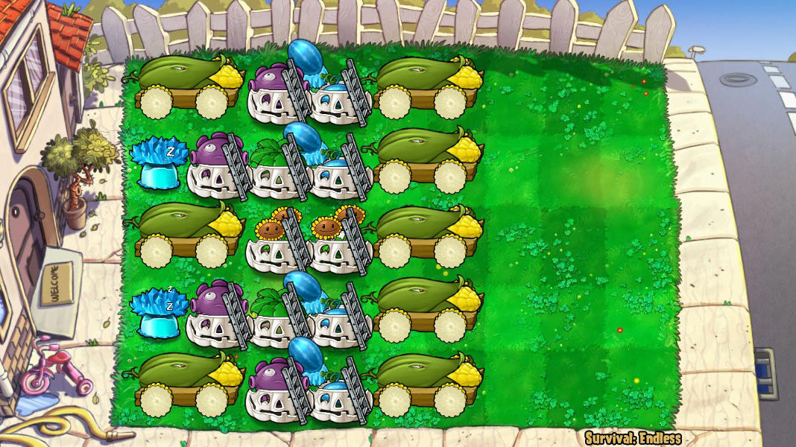
# coding=utf-8
"""
作者: lmintlcx
日期: 2019-03-14
阵名: DE前置八炮
出处: https://tieba.baidu.com/p/3943536673
节奏: ch5: PP|I-PP|IPP-PP, (601|1437|1437)
视频:
- https://www.bilibili.com/video/av40974728
- https://www.youtube.com/watch?v=0AjJlfJ1dX0
"""
from pvz import *
# EnableLogger(False) # 输出调试信息
# SetWindowTopMost(True) # 窗口置顶
# BackgroundRunning(True) # 允许后台运行
# ZombieNoFalling(True) # 僵尸死后不掉钱
# SetSun(8000) # 阳光 8000
# SetMoney(0) # 金钱 0
# JumpLevel(1009) # 完成 2018 面旗帜数
SetZombies(["普僵", "撑杆", "舞王", "冰车", "气球", "矿工", "小丑", "跳跳", "蹦极", "扶梯", "篮球", "白眼", "红眼"])
Sleep(200)
SelectCards(["咖啡豆", "寒冰菇", "复制冰", "樱桃", "窝瓜", "坚果", "花盆", "胆小菇", "阳光菇", "小喷菇"])
# UpdatePaoList([(1, 1), (1, 5), (3, 1), (3, 5), (2, 5), (4, 5), (5, 1), (5, 5)])
StartAutoCollectThread()
StartAutoFillIceThread([(2, 1), (4, 1), (3, 7)], 14 - 1)
for wave in range(1, 21):
print("当前操作波次: " + str(wave))
Prejudge(-200, wave)
# PP
if wave in (1, 4, 7, 10, 13, 16, 19):
Until(-55) if wave == 10 else Until(-95)
TryPao((2, 9), (4, 9))
Until(601 + 10 - 298)
Coffee()
if wave in (19,):
Until(601 + 1437 - 200 - 373)
TryPao((2, 8.7), (4, 8.7))
# Until(601 + 1437 - 150)
Until(4500 - 200 - 373)
TryPao((2, 8.4), (4, 8.4))
# I-PP
elif wave in (2, 5, 8, 11, 14, 17):
if wave == 2:
Until(10 + 400)
Card("倭瓜", (3, 9)) # 压冰车护存冰
if wave == 11:
Until(10 + 400 - 100)
Card("樱桃", (3, 8)) # 炸冰车小偷护存冰
if wave == 2:
Until(750)
Card("小喷菇", (3, 8)) # 垫撑杆
Delay(100)
Shovel((3, 8))
Until(1437 - 200 - 373)
TryPao((2, 8.7), (4, 8.7))
Until(1437 + 20 - 298)
Coffee()
# IPP-PP
elif wave in (3, 6, 9, 12, 15, 18):
Until(-150)
TryPao((2, 8.5), (4, 8.5))
Until(1437 - 200 - 373)
TryPao((2, 8.7), (4, 8.7))
if wave in (9,):
Until(1437 - 95)
TryPao((2, 8.7), (4, 8.7))
# Until(1437 + 601 + 1437 - 200 - 373)
Until(4500 - 200 - 373)
TryPao((2, 8.4), (4, 8.4))
elif wave == 20:
Until(-60)
TryPao((2, 9), (4, 9), (2, 9), (4, 9))
# Delay(100)
# TryPao((1, 8.8), (4, 8.8))
Until(601 - 298)
Coffee() # 冰杀小偷
Until(601 + 10)
Card("复制冰", (4, 1)) # 最后一个存冰
print(f"第 {wave} 波手动收尾.")
# coding=utf-8
"""
作者: lmintlcx
日期: 2019-03-14
阵名: NE舞夜惊魂
出处: https://tieba.baidu.com/p/4354954825
节奏: P6-C: PPC|PPC|PPC|PPC|PPC|PPC
视频:
- https://www.bilibili.com/video/av38406841
- https://www.youtube.com/watch?v=Br-c7O4Z2d0
"""
from pvz import *
# Cannon Fodder
diancai_list = ["小喷菇", "模仿者小喷菇"]
diancai_spot = (4, 9)
diancai_index = 0
@RunningInThread
def DianCai():
global diancai_index
# 种垫材
while ReadMemory("bool", 0x6A9EC0, 0x768, 0x164): # 等待取消暂停
Delay(1)
Card(diancai_list[diancai_index % len(diancai_list)], diancai_spot)
diancai_index += 1
# 等待
Delay(200)
# 铲垫材
while ReadMemory("bool", 0x6A9EC0, 0x768, 0x164): # 等待取消暂停
Delay(1)
Shovel(diancai_spot)
# 收尾操作, 多炸三轮
def Ending():
for _ in range(3):
Delay(601 - 175 - 95)
Pao((2, 9))
Delay(80)
Pao((4, 9))
Delay(15 + 175)
DianCai()
###
###
###
# EnableLogger(False) # 输出调试信息
# SetWindowTopMost(True) # 窗口置顶
# BackgroundRunning(True) # 允许后台运行
# ZombieNoFalling(True) # 僵尸死后不掉钱
# SetSun(8000) # 阳光 8000
# SetMoney(0) # 金钱 0
# JumpLevel(1009) # 完成 2018 面旗帜数
SetZombies(["普僵", "撑杆", "舞王", "小丑", "气球", "矿工", "跳跳", "蹦极", "扶梯", "篮球", "白眼", "红眼"])
Sleep(200)
SelectCards(["小喷菇", "模仿者小喷菇"])
UpdatePaoList([(1, 1), (2, 1), (3, 1), (4, 1), (5, 1), (1, 6), (2, 6), (3, 5), (3, 7), (4, 5), (4, 7), (5, 6)])
StartAutoCollectThread()
StartStopDancerThread()
for wave in range(1, 21):
print("当前操作波次: " + str(wave))
if wave == 10:
Prejudge(-55, wave)
Pao((2, 9))
Until(-15)
Pao((4, 9))
Until(175)
DianCai()
elif wave == 20:
Prejudge(-55, wave)
Pao((2, 9))
Until(-35)
Pao((2, 8), (5, 8)) # 炸墓碑冒出的僵尸
Until(-15)
Pao((4, 9))
Until(175)
DianCai()
Ending() # 收尾
else:
Prejudge(-95, wave)
Pao((2, 9))
Until(-15) # Delay(80)
Pao((4, 9))
Until(175) # Delay(15 + 175)
DianCai()
if wave in (9, 19):
Ending() # 收尾
# coding=utf-8
"""
作者: 冰巫师墨舞, lmintlcx
日期: 2019-03-14
阵名: NE十五炮
出处: https://tieba.baidu.com/p/1067040250
节奏: C8u: IPP-PP|PADC|PPDD|IPP-PP|NDC|PPDD, (13|6|6|13|6|6)
视频:
- https://www.bilibili.com/video/av41128772
- https://www.youtube.com/watch?v=QltplZCAuoI
"""
from pvz import *
@RunningInThread
def DianCai():
Card("小喷", (4, 9))
Card("阳光", (5, 9))
Delay(120)
Shovel((4, 9))
Shovel((5, 9))
# EnableLogger(False) # 输出调试信息
# SetWindowTopMost(True) # 窗口置顶
# BackgroundRunning(True) # 允许后台运行
# ZombieNoFalling(True) # 僵尸死后不掉钱
# SetSun(8000) # 阳光 8000
# SetMoney(0) # 金钱 0
# JumpLevel(1009) # 完成 2018 面旗帜数
SetZombies(["普僵", "撑杆", "舞王", "小丑", "气球", "矿工", "跳跳", "蹦极", "扶梯", "篮球", "白眼", "红眼"])
Sleep(200)
SelectCards(["复制冰", "原版冰", "核蘑菇", "樱桃", "倭瓜", "墓碑", "南瓜", "三叶草", "阳光菇", "小喷菇"])
# UpdatePaoList([
# (1, 1), (2, 1), (3, 1), (4, 1), (5, 1),
# (1, 5), (2, 5), (3, 5), (4, 5), (5, 5),
# (1, 7), (2, 7), (3, 7), (4, 7), (5, 7),
# ])
StartAutoCollectThread()
for wave in range(1, 21):
print("当前操作波次: " + str(wave))
# PPD
if wave in (10,):
Prejudge(-200, wave)
Until(-55)
Pao((2, 9), (4, 9))
Until(0)
Pao((2, 9))
# IPP-PP
elif wave in (1, 7, 11, 17):
Prejudge(-200, wave)
Until(-150)
Pao((2, 8.5), (4, 8.5))
Until(5 - 100)
Card("寒冰菇", (1, 9))
if wave == 11:
Until(-150 + 81)
DianCai()
Until(1300 - 200 - 373)
Pao((2, 9), (4, 9))
# PADC
elif wave in (2, 8, 12, 18):
Prejudge(-200, wave)
Until(-95)
Pao((2, 9))
Until(-12)
Pao((2, 9))
Until(-95 + 373 - 100)
Card("樱桃", (5, 9))
# PPDD
elif wave in (3, 9, 13, 19):
Prejudge(-200, wave)
Until(-95)
Pao((2, 9), (5, 9))
Until(-15)
Pao((1, 9), (4, 9))
Until(0)
DianCai()
Until(601 + 44 - 100 - 320) # 44cs 预判冰
Card("模仿者寒冰菇", (1, 9))
if wave in (9, 19):
Until(601 - 150)
Pao((4, 9))
Delay(450)
Pao((1, 9))
Until(601 + 1300 - 200 - 373)
Delay(300)
Pao((2, 9), (5, 9))
# IPP-PP
elif wave in (4, 14):
Prejudge(-200, wave)
Until(-150)
Pao((2, 8.5), (4, 8.5))
Until(1300 - 200 - 373)
Pao((2, 9), (4, 9))
# NDC
elif wave in (5, 15):
Prejudge(-200, wave)
Until(-12)
Pao((2, 9))
Until(-95 + 373 - 100)
Card("核蘑菇", (3, 9) if wave == 5 else (2, 9))
# PPDD
elif wave in (6, 16):
Prejudge(-200, wave)
Until(-95)
Pao((2, 9), (5, 9))
Until(-12)
Pao((1, 9), (4, 9))
Until(0)
DianCai()
elif wave == 20:
Prejudge(-200, wave)
Until(-55)
Pao((1, 9), (4, 9))
Until(-35)
Pao((2, 9), (5, 9)) # 炸墓碑冒出的僵尸
Until(601 - 100 - 81)
Pao((1, 8.3), (4, 8.3))
Until(601 - 100)
# 冰杀小偷
with MouseLock():
SafeClick()
ClickSeed("寒冰菇")
ClickGrid((1, 9))
ClickGrid((2, 9))
ClickGrid((3, 9))
ClickGrid((4, 9))
ClickGrid((5, 9))
SafeClick()
Delay(100)
Pao((2, 8.2), (5, 8.2))
print(f"第 {wave} 波手动收尾.")

# coding=utf-8
"""
作者: lmintlcx
日期: 2019-03-14
阵名: RE十六炮
出处: https://tieba.baidu.com/p/1410367512
节奏: ch6: PSD/P|IP-PPD|PSD/P|IP-PPD, (6|12|6|12)
视频:
- https://www.bilibili.com/video/av38407808
- https://www.youtube.com/watch?v=g1xNVLRDyKo
"""
from pvz import *
# EnableLogger(False) # 输出调试信息
# SetWindowTopMost(True) # 窗口置顶
# BackgroundRunning(True) # 允许后台运行
# ZombieNoFalling(True) # 僵尸死后不掉钱
# SetSun(8000) # 阳光 8000
# SetMoney(0) # 金钱 0
# JumpLevel(1009) # 完成 2018 面旗帜数
SetZombies(["普僵", "撑杆", "橄榄", "冰车", "小丑", "气球", "跳跳", "蹦极", "扶梯", "篮球", "白眼", "红眼"])
Sleep(200)
SelectCards(["玉米", "玉米炮", "樱桃", "倭瓜", "坚果", "核蘑菇", "冰蘑菇", "模仿者寒冰菇", "咖啡豆", "花盆"])
UpdatePaoList(
[
(1, 3), # P
(1, 5), # S
(1, 7), # P
(1, 1), # D
(2, 3), # P
(2, 5), # P
(2, 7), # P
(2, 1), # D
(3, 3), # P
(3, 5), # S
(3, 7), # P
(3, 1), # D
(4, 6), # P
(4, 1), # P
(5, 6), # P
(5, 1), # D
]
)
StartAutoFillIceThread([(5, 3), (4, 3)], 11)
StartAutoCollectThread()
for wave in range(1, 21):
print("当前操作波次: " + str(wave))
# PPSD
if wave in (1, 3, 5, 7, 9, 10, 12, 14, 16, 18):
Prejudge(-10, wave) # -10+373 < 370
RoofPao((2, 9), (2, 9), (4, 9))
Delay(110) # 110 拦截
RoofPao((2, 8.8))
Until(601 + 50 - 298) # 50cs 预判冰
Coffee()
if wave == 9:
Until(601 - 150)
RoofPao((2, 9))
Until(601 + 1200 - 200 - 373)
RoofPao((5, 9), (5, 9))
Delay(1100) # 等会儿
RoofPao((5, 9))
# IP-PPD
elif wave in (2, 4, 6, 8, 11, 13, 15, 17, 19):
Prejudge(-150, wave)
RoofPao((2, 9))
Until(1200 - 200 - 373) # 1200cs 波长
RoofPao((2, 9), (4, 9)) # 激活炸
Delay(220) # 220 拦截
RoofPao((2, 7.8))
if wave == 19:
Until(1200 - 10)
RoofPao((2, 9), (2, 9), (4, 9))
Delay(110) # 110 拦截
RoofPao((2, 8.8))
Until(1200 + 601 - 150)
RoofPao((5, 9))
Until(1200 + 601 + 1200 - 200 - 373)
Delay(50) # 等会儿
RoofPao((5, 9))
elif wave == 20:
Prejudge(-200, wave)
Coffee() # 冰消空降
Until(-100)
RoofPao((2, 9), (5, 9)) # 炸冰车
Until(50)
RoofPao((4, 2.5), (4, 6.7)) # 炸小偷
Until(800)
RoofPao((2, 9), (2, 9), (2, 9), (2, 9))
Until(1000)
RoofPao((4, 9), (4, 9), (4, 9), (4, 9))
print(f"第 {wave} 波手动收尾.")
# coding=utf-8
"""
作者: lmintlcx, 冰巫师墨舞
日期: 2019-03-14
阵名: RE椭盘十四炮
出处: https://tieba.baidu.com/p/5029428684
节奏: ch4-35.6s: ICE3+PPDD+P-PP|ICE3+PPDD+P-PP, (17.8|17.8)
视频:
- https://www.bilibili.com/video/av38408382
- https://www.youtube.com/watch?v=KoFX0SIMzWk
"""
from pvz import *
# EnableLogger(False) # 输出调试信息
# SetWindowTopMost(True) # 窗口置顶
# BackgroundRunning(True) # 允许后台运行
# ZombieNoFalling(True) # 僵尸死后不掉钱
# SetSun(8000) # 阳光 8000
# SetMoney(0) # 金钱 0
# JumpLevel(1009) # 完成 2018 面旗帜数
SetZombies(["普僵", "撑杆", "橄榄", "冰车", "小丑", "气球", "跳跳", "蹦极", "扶梯", "篮球", "白眼", "红眼"])
Sleep(200)
SelectCards(["花盆", "寒冰菇", "模仿者寒冰菇", "毁灭菇", "咖啡豆", "樱桃炸弹", "火爆辣椒", "倭瓜", "寒冰射手", "坚果墙"])
UpdatePaoList(
[
(4, 2), # P
(4, 4), # P
(1, 4), # D
(5, 4), # D
(5, 6), # s
(3, 1), # P
(4, 7), # P
###
(1, 2), # P
(2, 4), # P
(3, 3), # D
(3, 5), # D
(2, 6), # s
(2, 1), # P
(3, 7), # P
]
)
# IPPDDP-PP IPPDDP-PP 14
# PPDDDD IP-PP 9
# PPSSDD IAA'aP-PP 9
SkipPao(5) # 调整炮序
# while GameUI() != 3:
# Sleep(1)
# while GamePaused():
# Sleep(1)
Card("花盆", (1, 7))
Card("寒冰菇", (1, 7))
StartAutoCollectThread([1, 2, 3, 4, 5, 6, 17], 15)
StartAutoFillIceThread([(4, 6), (2, 3), (1, 1), (1, 6)], 18 - 1)
for wave in range(1, 21):
print("当前操作波次: " + str(wave))
if wave in (1,):
Prejudge(-200, wave)
Until(380 - 373)
RoofPao((2, 8.8), (4, 8.8))
Until(510 - 373)
RoofPao((2, 8.8), (4, 8.8))
Until(601 + 36 - 373)
RoofPao((2, 8.8), (4, 8.8))
Until(601 + 36 - 298)
Card("咖啡豆", (1, 7)) # Coffee()
elif wave in (2,):
Prejudge(-200, wave)
Until(50)
Shovel((1, 7)) # 铲
Until(1300 - 200 - 373) # 727
RoofPao((4, 8.1))
Until(1780 - 200 - 373) # 1207
RoofPao((2, 9), (4, 9))
Until(1780 + 10 - 298) # 1492
Coffee()
elif wave in (10,):
Prejudge(-15, wave)
RoofPao((2, 9), (4, 9), (2, 9), (4, 9))
Until(-15 + 110) # 95
RoofPao((4, 7.7)) # 空炸小鬼兼小偷
Until(-15 + 190) # 175
RoofPao((1, 5)) # 2-5? 尾炸小鬼兼小偷
Until(601 + 10 - 298) # 313
Coffee()
elif wave in (11,):
Prejudge(-200, wave)
Until(10 + 400 - 100)
Card("辣椒", (1, 7))
Card("花盆", (4, 9))
Card("樱桃", (4, 9))
Until(10 + 400 + 10)
Shovel((1, 7)) # 铲
Shovel((4, 9)) # 铲
Until(1250 - 200 - 373) # 1300->1250
RoofPao((3, 8.15)) # 落点改为 3 路炸掉 2 路冰车
Until(1780 - 200 - 373)
RoofPao((2, 9), (4, 9))
Until(1780 + 10 - 298)
Coffee()
elif wave in (3, 12):
Prejudge(-200, wave)
Until(10 + 400 - 373)
RoofPao((2, 9), (4, 9))
Until(10 + 400 - 373 + 220)
RoofPao((4, 8.5)) # 空炸
Until(10 + 400 - 373 + 300)
RoofPao((2, 4.7)) # 尾炸小鬼跳跳
Until(1300 - 200 - 373)
RoofPao((4, 8.1))
Until(1780 - 200 - 373)
RoofPao((2, 9), (4, 9))
Until(1780 + 10 - 298)
Coffee()
elif wave in (9, 19):
Prejudge(-200, wave)
Until(10 + 400 - 373)
RoofPao((2, 9), (4, 9))
Until(10 + 400 - 373 + 220)
RoofPao((2, 8.5), (4, 8.5))
Until(1300 - 200 - 373) # 727
RoofPao((3, 8.15)) # 落点改为 3 路减少小丑炸核机率
# 收尾
Until(1680 - 200 - 298) # 1182
Card("花盆", (3, 9))
Card("核蘑菇", (3, 9))
Card("咖啡豆", (3, 9))
Until(1680 - 200 + 230 - 373)
RoofPao((2, 8.5), (4, 8.5)) # 拦截
Until(1680 - 200 + 230 + 230 - 373)
RoofPao((2, 8.5), (4, 8.5)) # 拦截
Until(1680 - 200 + 230 + 230 + 230 - 373)
RoofPao((3, 9), (5, 9)) # 留下 1 路
Delay(50)
Card("寒冰射手", (1, 6))
# 清场
if wave == 9:
SkipPao(7 - 4 - 1 + 5) # 调整炮序
Until(2700)
Card("花盆", (1, 8)) # 垫一下
Until(4500 - 200 - 373) # Until(4500 - 5) # 出红字时
Delay(400) # 等那一门炮
RoofPao((1, 8)) # 清场
Until(4500 - 200 + 100)
Shovel((1, 6)) # 铲掉冰豆
Until(4500 - 5 + 750 - 599) # 第 10 波刷新前 599
Card("花盆", (1, 7))
else: # 19
Until(4500 - 200 - 373)
RoofPao((1, 8)) # 清场
Delay(200)
Shovel((1, 6)) # 铲掉冰豆
elif wave in (20,):
Prejudge(50 - 298, wave)
Coffee() # 冰消空降
Until(-150)
RoofPao((4, 9)) # 炸 3/4 路冰车
Until(75)
RoofPao((1, 6), (2, 3), (4, 6)) # 炸小偷
Until(1250 - 200 - 373)
RoofPao((1, 9), (2, 9), (4, 9), (5, 9))
Until(1250 - 200 - 373 + 220)
RoofPao((1, 9), (2, 9), (4, 9), (5, 9))
# 收尾
print(f"第 {wave} 波手动收尾.")
# Delay(900)
# while not TryPao((4, 9)):
# Delay(10)
# Delay(100)
# while not TryPao((3, 9)):
# Delay(10)
# Card("花盆", (1, 7))
# Card("坚果", (1, 7))
# Until(5500)
# Card("倭瓜", (1, 6))
# Until(5600)
# Shovel((1, 7))
# Shovel((1, 7))
else: # wave in (4, 5, 6, 7, 8, 13, 14, 15, 16, 17, 18):
WL = 1950 if wave in (8, 18) else 1780 # 收尾波前一波延长波长
Prejudge(-200, wave)
Until(10 + 400 - 373)
RoofPao((2, 9), (4, 9))
Until(10 + 400 - 373 + 220)
RoofPao((2, 8.5), (4, 8.5))
Until(1300 - 200 - 373)
RoofPao((4, 8.1))
Until(WL - 200 - 373) # WL-573
RoofPao((2, 9), (4, 9))
if wave in (8, 18):
Until(WL - 200 - 373 + 81) # WL-492
Card("花盆", (2, 8)) # 垫 2 路梯子
Until(WL + 10 - 298) # WL-288
Coffee()
if wave in (8, 18):
Until(WL - 200) # WL-200
Shovel((2, 8)) # 炮落地铲
# coding=utf-8
"""
作者: lmintlcx
日期: 2019-03-14
阵名: ME十三炮
出处: https://tieba.baidu.com/p/5288033944
节奏: C5u-35s: PPD|PPD|PPD|IP-PPD, (6|6|6|17)
视频:
- https://www.bilibili.com/video/av38407390
- https://www.youtube.com/watch?v=jUjvLI_bUqM
"""
from pvz import *
@RunningInThread
def I():
Card("花盆", (3, 7))
Card("寒冰菇", (3, 7))
Delay(100 + 1)
Shovel((3, 7))
@RunningInThread
def II():
Card("花盆", (3, 7))
Card("复制冰", (3, 7))
Delay(320 + 100 + 1)
Shovel((3, 7))
###
# EnableLogger(False) # 输出调试信息
# SetWindowTopMost(True) # 窗口置顶
# BackgroundRunning(True) # 允许后台运行
# ZombieNoFalling(True) # 僵尸死后不掉钱
# SetSun(8000) # 阳光 8000
# SetMoney(0) # 金钱 0
# JumpLevel(1009) # 完成 2018 面旗帜数
SetZombies(["普僵", "撑杆", "橄榄", "冰车", "小丑", "气球", "跳跳", "蹦极", "扶梯", "篮球", "白眼", "红眼"])
Sleep(200)
SelectCards(["玉米", "玉米炮", "三叶草", "保护伞", "樱桃", "倭瓜", "坚果", "花盆", "寒冰菇", "复制冰"])
UpdatePaoList([(1, 3), (1, 5), (1, 1), (2, 3), (2, 5), (2, 1), (3, 3), (3, 5), (3, 1), (4, 6), (4, 1), (5, 6), (5, 1)])
StartAutoCollectThread()
for wave in range(1, 21):
print("当前操作波次: " + str(wave))
if wave in (20,):
Prejudge(10 - 320, wave)
II() # 冰消空降
Until(100)
TryPao((5, 8)) # 收尾了就随意选炮吧
Until(800)
TryPao((2, 9), (2, 9), (2, 9), (2, 9))
Until(1000)
TryPao((4, 9), (4, 9), (4, 9), (4, 9))
print(f"第 {wave} 波手动收尾.")
# IP-PPD
elif wave in (4, 8, 10, 14, 18):
Prejudge(-200, wave)
if wave in (4, 10, 18): # 本波原版冰
Until(5 - 100)
I()
Until(100)
RoofPao((5, 8))
Until(1700 - 200 - 373)
RoofPao((2, 8.5), (4, 8.5))
Delay(230) # Until(1700 - 200 - 373 + 230) # 减速延迟 230 炸小鬼
RoofPao((2, 7))
# PPD
else: # elif wave in (1, 2, 3, 5, 6, 7, 9, 11, 12, 13, 15, 16, 17, 19):
Prejudge(10, wave) # 刷新后
RoofPao((2, 8.5), (4, 8.5))
Delay(130) # Until(10 + 130) # 原速延迟 130 炸小鬼
RoofPao((2, 7.7))
if wave in (7, 13): # 下一波的复制冰
Until(601 + 5 - 100 - 320)
II()
if wave in (9, 19): # 收尾
Until(601)
RoofPao((2, 8.5), (4, 8.5))
Delay(130)
RoofPao((2, 7.5))
# 自动操作收尾
Until(601 + 601)
RoofPao((2, 8.5))
Delay(300)
RoofPao((5, 8))
Delay(500)
RoofPao((5, 8))
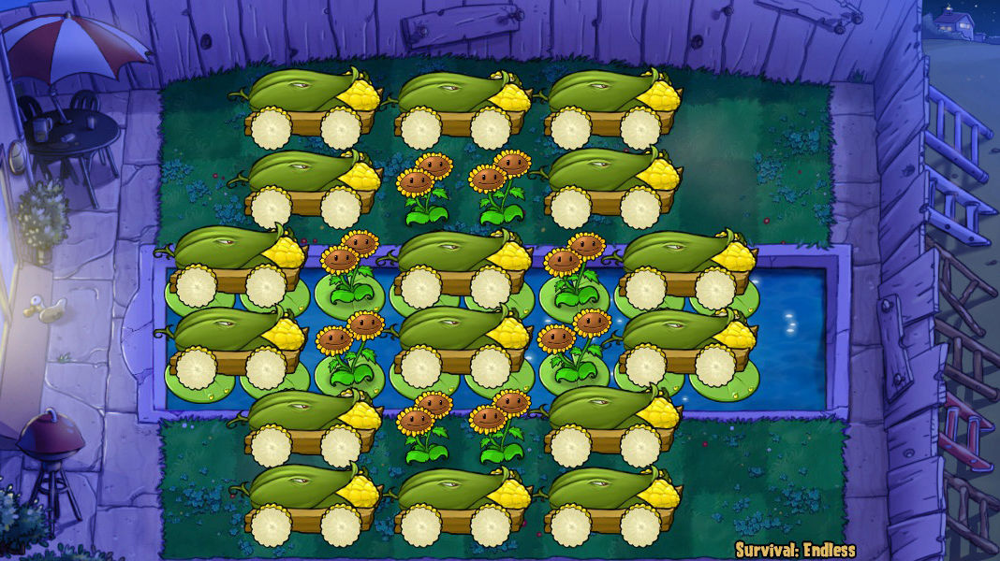
# coding=utf-8
"""
作者: lmintlcx
日期: 2019-03-14
阵名: FE花环十六炮
出处: https://tieba.baidu.com/p/4394965593
节奏: C8u-50s: I-PPDD|I-PPDD|PPA'dd|PPDD|NAd|PPDD, (13|13|6|6|6|6)
视频:
- https://www.bilibili.com/video/av38409700
- https://www.youtube.com/watch?v=La31spQ_bzU
"""
from pvz import *
# EnableLogger(False) # 输出调试信息
# SetWindowTopMost(True) # 窗口置顶
# BackgroundRunning(True) # 允许后台运行
# ZombieNoFalling(True) # 僵尸死后不掉钱
# ClearFog(True) # 开雾
# SetSun(8000) # 阳光 8000
# SetMoney(0) # 金钱 0
# JumpLevel(1009) # 完成 2018 面旗帜数
SetZombies(["普僵", "撑杆", "舞王", "冰车", "海豚", "矿工", "跳跳", "蹦极", "扶梯", "篮球", "白眼", "红眼"])
Sleep(200)
SelectCards(["玉米投手", "玉米加农炮", "睡莲", "毁灭菇", "寒冰菇", "模仿者寒冰菇", "樱桃炸弹", "火爆辣椒", "坚果", "倭瓜"])
UpdatePaoList(
[
(3, 1),
(3, 4),
(3, 7), # 计划铲种
(6, 4),
(6, 6),
(6, 2),
(1, 6),
(1, 2),
(1, 4),
(4, 1),
(4, 4),
(4, 7), # 计划铲种
(5, 6),
(5, 2),
(2, 6),
(2, 2),
]
)
# 自动收集
StartAutoCollectThread()
## 逐波操作
# 1 PPDD
Prejudge(-95, 1)
Pao((2, 9), (5, 9))
Delay(110)
Pao((1, 7.8), (5, 7.8))
# 2 PPDD
Prejudge(-95, 2)
Pao((2, 9), (5, 9))
Delay(110)
Pao((1, 7.8), (5, 7.8))
# 3 PPDD
Prejudge(-15, 3)
Pao((2, 9), (5, 9))
Delay(107)
Pao((1, 7.7), (5, 7.7))
# 4 I-PPDD
Prejudge(-95, 4)
Until(5 - 100)
Card("寒冰菇", (1, 1)) # 5cs
Until(1300 - 200 - 373)
Pao((2, 9), (5, 9))
Until(1300 + 58 - 100 - 320) # 938
Card("模仿者寒冰菇", (1, 1)) # 58cs
Until(1300 - 200 - 373 + 220) # 947
Pao((1, 7.8), (5, 7.8))
# 5 I-PPDD
Prejudge(-95, 5)
SetFixPao((3, 7)) # 铲种炮
Until(1300 - 200 - 373)
Pao((2, 9), (5, 9))
Until(1300 - 200 - 373 + 220)
Pao((1, 8.5), (5, 8.5))
# 6 PPA'dd
Prejudge(-133, 6)
Pao((2, 9), (5, 9))
Until(-133 + 250) # 115
Pao((1, 2.4), (5, 2.4)) # 尾炸
Until(-133 + 373 - 100) # 138
Card("火爆辣椒", (1, 1))
# 7 PPDD
Prejudge(-95, 7)
Pao((2, 9), (5, 9))
Delay(110)
Pao((1, 7.8), (5, 7.8))
# 8 NAd
Prejudge(-200, 8)
Until(-95 + 240 - 30) # 145-30
Pao((5, 4), 30) # 尾炸
Until(-95 + 373 - 100) # 178
Card("睡莲", (3, 9))
Card("毁灭菇", (3, 9))
Until(-95 + 110 + 373 - 100) # 288
Card("樱桃炸弹", (1, 8))
# 9 PPDD
Prejudge(-90, 9) # 晚点
Pao((2, 9), (5, 9))
Delay(110)
Pao((5, 7.8), (1, 7.8)) # 调整
Until(601 + 5 - 100)
Card("寒冰菇", (1, 1))
# 收尾
Delay(600) # 等会儿
Pao((2, 7.1), (5, 7.1)) # 只留本波巨人
Until(601 + 1300 + 58 - 100 - 320)
Card("模仿者寒冰菇", (1, 1)) # 58cs
Delay(600) # 等会儿
Pao((2, 8.5), (5, 8.5))
Delay(220)
Pao((1, 8), (5, 8))
Delay(800) # 等樱桃冷却
Pao((2, 8), (5, 8))
# 10 PPAdd
Prejudge(-55, 10)
Pao((2, 9), (5, 9))
Until(-55 + 240) # 185
Pao((2, 4), (5, 4)) # 尾炸小偷
Until(-55 + 373 - 100) # 218
Card("樱桃炸弹", (2, 9))
# 11 PPDD
Prejudge(-95, 11)
Pao((2, 9), (5, 9))
Delay(110)
Pao((1, 7.8), (5, 7.8))
# 12 PPDD
Prejudge(-15, 12)
Pao((2, 9), (5, 9))
Delay(107)
Pao((1, 7.7), (5, 7.7))
# 13 I-PPDD
Prejudge(-95, 13)
Until(5 - 100) # -95
Card("寒冰菇", (1, 1)) # 5cs
Until(1300 - 200 - 373)
Pao((2, 9), (5, 9))
Until(1300 + 58 - 100 - 320) # 938
Card("模仿者寒冰菇", (1, 1)) # 58cs
Until(1300 - 200 - 373 + 220) # 947
Pao((1, 7.8), (5, 7.8))
# 14 I-PPDD
Prejudge(-95, 14)
SetFixPao((4, 7)) # 铲种炮
Until(1300 - 200 - 373)
Pao((2, 9), (5, 9))
Until(1300 - 200 - 373 + 220)
Pao((1, 8.5), (5, 8.5))
# 15 PPA'dd
Prejudge(-133, 15)
Pao((2, 9), (5, 9))
Until(-133 + 250) # 115
Pao((1, 2.4), (5, 2.4)) # 尾炸
Until(-133 + 373 - 100) # 138
Card("火爆辣椒", (1, 1))
# 16 PPDD
Prejudge(-95, 16)
Pao((2, 9), (5, 9))
Delay(110)
Pao((1, 7.8), (5, 7.8))
# 17 NAd
Prejudge(-200, 17)
Until(-95 + 240 - 30) # 145-30
Pao((5, 4), 30) # 尾炸
Until(-95 + 373 - 100) # 178
Card("睡莲", (4, 9))
Card("毁灭菇", (4, 9))
Until(-95 + 110 + 373 - 100) # 288
Card("樱桃炸弹", (1, 8))
# 18 PPDD
Prejudge(-15, 18)
Pao((2, 9), (5, 9))
Delay(107)
Pao((5, 7.7), (1, 7.7)) # 调整
# 19 I-PPDD
Prejudge(-95, 19)
Until(5 - 100)
Card("寒冰菇", (1, 1)) # 5cs
Until(1300 - 200 - 373)
Pao((2, 9), (5, 9))
# Until(1300 + 58 - 100 - 320) # 940 # 58cs
Until(1300 - 200 - 373 + 220) # 947
Pao((1, 7.8), (5, 7.8))
Delay(250)
Pao((1, 1), (5, 1)) # 尾炸矿工
Delay(250) # 等会儿再冰
Card("模仿者寒冰菇", (1, 1))
# 收尾
Until(1300 + 1300 - 200 - 373) # 2027
Pao((2, 9), (5, 9))
Delay(220)
Pao((1, 8.5), (5, 8.5))
Delay(1300) # 等寒冰菇冷却
Pao((2, 8), (5, 8))
# 20
Prejudge(-95, 20)
Pao((2, 8), (5, 8)) # 炸矿工冰车
Until(50)
Card("寒冰菇", (1, 1)) # 冰消珊瑚
Until(75)
Pao((2, 4), (5, 4)) # 炮炸小偷
Until(750)
Pao((2, 9), (5, 9)) # 轰 !!!
Delay(50)
Pao((2, 9), (5, 9)) # 轰 !!!
Delay(50)
Pao((2, 9), (5, 9)) # 轰 !!!
Delay(50)
Pao((2, 9), (5, 9)) # 轰 !!!
print(f"最后一大波手动收尾.")
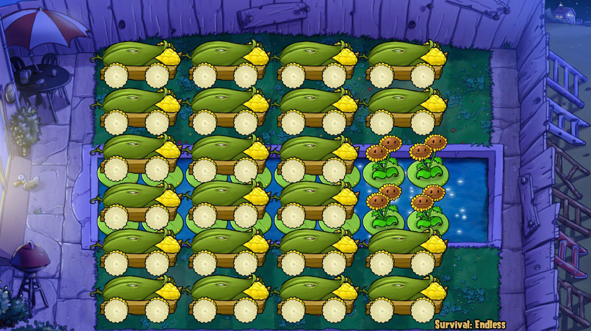
# coding=utf-8
"""
作者: 冰巫师墨舞, lmintlcx
日期: 2019-03-14
阵名: FE二十二炮
出处: None
节奏: ch9-57s: IPP-PPDD|PSD/PDC|IPP-PPDD|PSD/PDC|N+AD/DC|PD/PDC|PSD/PDC, (13.5|6|13.5|6|6|6|6)
视频:
- https://www.bilibili.com/video/av46250639
- https://www.youtube.com/watch?v=RB3VUOx61x8
"""
from pvz import *
# Cannon Fodder
# 下标 6/7 8/9
# 垫材 花盆/胆小菇 阳光菇/小喷菇
# 根据小喷是否可用来决定用哪一组垫材
@RunningInThread
def DianCai():
if ReadMemory("bool", 0x6A9EC0, 0x768, 0x144, 0x70 + 9 * 0x50):
Card("阳光菇", (5, 9))
Card("小喷菇", (6, 9))
else:
Card("花盆", (5, 9))
Card("胆小菇", (6, 9))
Delay(30)
Shovel((5, 9), (6, 9))
## 定义逐波操作
# IPP-PPDD
def wave1():
Until(5 - 100) # 本波 5cs 预判冰
Card("寒冰菇", (2, 9))
Until(-15)
Pao((1, 8.8)) # 上半场热过渡, 炸 1 路收跳跳
Until(444 - 373)
Pao((5, 7.4)) # 下半场热过渡, 右极限大概 7.43
Until(1350 - 200 - 373)
Pao((2, 9), (5, 8.7)) # 激活炮, 下半场落点左移收跳跳
Delay(220)
Pao((1, 8.6), (5, 8.6)) # 连续拦截之一, 落点左移
# PSD/PDC
def wave2():
Until(-133) # 133 预判对应上波过 220 继续拦截
Pao((1, 9), (5, 9)) # 连续拦截之二
Until(-95)
Pao((2, 9)) # 上半场 S
Until(-133 + 110)
Pao((5, 7.8)) # 下半场 D
Until(-95 + 110)
Pao((1, 8.8)) # 上半场 D
Until(601 + 5 - 100 - 320) # 下一波 5cs 预判冰
Card("模仿者寒冰菇", (2, 9))
# IPP-PPDD
# 相比 wave1() 多了垫材操作
def wave3():
Until(-180)
DianCai() # 垫上一波撑杆
Until(-15)
Pao((1, 8.8))
Until(444 - 373)
Pao((5, 7.4))
Until(5 + 600) # 全部解冻
DianCai() # 垫红眼
Until(1350 - 200 - 373)
Pao((2, 9), (5, 8.7))
Delay(220)
Pao((1, 8.6), (5, 8.6))
# PSD/PDC
# 炸法同 wave2()
def wave4():
Until(-133)
Pao((1, 9), (5, 9))
Until(-95)
Pao((2, 9))
Until(-133 + 110 - 30)
Pao((5, 7.8), 30) # 避免射不到自己
Until(-95 + 110)
Pao((1, 8.8))
# N+AD/DC
# 连续加速波下半场对应垫材 24 炮打法, 因此激活炮要尽早生效
# 最早为 218 可全炸巨人, 相当于 155 预判炮
# 这里 N 相当于激活炮, 上半场 A 相当于 S
def wave5():
Until(-145 + 81) # 下半场使撑杆不啃炮的最早放垫材时间
DianCai() # 垫上一波撑杆
Until(-145 + 110)
Pao((5, 7.8)) # 下半场 D
Until(-95 + 110)
Pao((1, 8.8)) # 上半场 D
Until(-145 + 373 - 100) # 等效 145 预判炮
Card("睡莲", (3, 9))
Card("毁灭菇", (3, 9))
Until(-95 + 373 - 100) # 等效 95 预判炮
Card("樱桃炸弹", (2, 9))
# PD/PDC
# 下半场对应垫材 24 炮打法, 上半场精准之舞
def wave6():
Until(-145)
Pao((5, 9)) # 下半场 P
Delay(81)
DianCai() # 垫上一波撑杆
Until(-145 + 110)
Pao((5, 7.8)) # 下半场 D
Until(-15)
Pao((2, 9)) # 上半场 P
Delay(107 - 30) # 避免射不到自己
Pao((1, 7.8), 30) # 上半场 D
# PSD/PDC
def wave7():
Until(-145)
Pao((5, 9)) # 下半场 P
Until(-95)
Pao((2, 9), (2, 9)) # 上半场 PS
Until(-145 + 81)
DianCai() # 垫上一波撑杆
Until(-145 + 110)
Pao((5, 7.8)) # 下半场 D
Until(-95 + 110)
Pao((1, 8.8)) # 上半场 D
# IPP-PPDD
def wave8():
Until(-180)
DianCai()
Until(5 - 100)
Card("寒冰菇", (2, 9))
Until(-15)
Pao((1, 8.8))
Until(444 - 373)
Pao((5, 7.4))
Until(1350 + 15 - 100 - 320 - 373 - 1) # 571
Pao((2, 8.2))
Until(5 + 600) # 全部解冻
DianCai()
Until(1350 - 200 - 373) # 777
Pao((2, 9), (5, 8.7))
Until(1350 + 15 - 100 - 320) # 945
Card("模仿者寒冰菇", (2, 9))
Until(1350 - 200 - 373 + 220) # 997
Pao((1, 8.8), (5, 8.6)) # 上半场炸撑杆
# 收尾
def wave9():
Until(-133)
Pao((1, 9), (5, 9))
Until(-15)
Pao((1, 9), (5, 9))
Until(1300 - 200 - 373) # 1350->1300
Pao((2, 9), (5, 9))
Delay(220)
Pao((1, 9), (5, 9))
Delay(220)
Pao((1, 9), (5, 9))
Delay(600) # 等冰菇 CD
Pao((2, 9), (5, 9))
Delay(700) # 清伴舞
Pao((2, 9), (5, 9))
# PSD/PDC
# 上半场 PSD, 下半场 15 预判收撑杆省垫材
def wave10():
Until(-57) # -57
Pao((1, 9))
Until(-15) # -15
Pao((5, 9))
Until(-57 + 104) # 420-373=47
Pao((2, 9))
Until(-15 + 110) # 95
Pao((5, 7.8))
Until(-57 + 104 + 110) # 157
Pao((1, 8.8))
# IPP-PPDD
def wave11():
# 相比 wave1() 多了垫红眼操作
Until(5 - 100)
Card("寒冰菇", (2, 9))
Until(-15)
Pao((1, 8.8))
Until(444 - 373)
Pao((5, 7.4))
Until(5 + 600) # 全部解冻
DianCai()
Until(1350 - 200 - 373)
Pao((2, 9), (5, 8.7))
Delay(220)
Pao((1, 8.6), (5, 8.6))
# PSD/PDC
def wave12():
wave2()
# IPP-PPDD
def wave13():
wave3()
# PSD/PDC
def wave14():
wave4()
# N+AD/DC
# 操作同 wave5(), 弹坑改为 4-9
def wave15():
Until(-145 + 81)
DianCai()
Until(-145 + 110)
Pao((5, 7.8))
Until(-95 + 110)
Pao((1, 8.8))
Until(-145 + 373 - 100)
Card("睡莲", (4, 9))
Card("毁灭菇", (4, 9))
Until(-95 + 373 - 100)
Card("樱桃炸弹", (2, 9))
# PD/PDC
def wave16():
wave6()
# PSD/PDC
def wave17():
wave7()
# IPP-PPDD
def wave18():
wave8()
# 收尾
def wave19():
wave9()
# PP-PPPPPPPP
def wave20():
Until(-150)
Pao((4, 7)) # 炮炸珊瑚
Until(-60) # 等到刷新前 60cs
Pao((2, 9), (5, 9))
Delay(108)
Pao((1, 8.8), (5, 8.8))
Delay(108)
Pao((1, 8.6), (5, 8.6))
Delay(108)
Pao((2, 8.4), (5, 8.4)) # 炸小偷
### 下面正式开始
# EnableLogger(False) # 输出调试信息
# SetWindowTopMost(True) # 窗口置顶
# BackgroundRunning(True) # 允许后台运行
# ZombieNoFalling(True) # 僵尸死后不掉钱
# ClearFog(True) # 开雾
# SetSun(8000) # 阳光 8000
# SetMoney(0) # 金钱 0
# JumpLevel(1009) # 完成 2018 面旗帜数
SetZombies(["普僵", "撑杆", "舞王", "冰车", "海豚", "矿工", "跳跳", "蹦极", "扶梯", "篮球", "白眼", "红眼"])
Sleep(200)
SelectCards(["寒冰菇", "模仿冰", "毁灭菇", "睡莲", "樱桃", "坚果", "花盆", "胆小", "阳光", "小喷"])
UpdatePaoList(
[
(1, 1),
(2, 1),
(3, 1),
(4, 1),
(5, 1),
(6, 1),
(1, 3),
(2, 3),
(3, 3),
(4, 3),
(5, 3),
(6, 3),
(1, 5),
(2, 5),
(3, 5),
(4, 5),
(5, 5),
(6, 5),
(1, 7),
(2, 7),
# (3, 7),
# (4, 7),
(5, 7),
(6, 7),
]
)
# 自动收集
StartAutoCollectThread()
Prejudge(-200, 1) # Prejudge(-599, 1)
wave1()
Prejudge(-200, 2)
wave2()
Prejudge(-200, 3)
wave3()
Prejudge(-200, 4)
wave4()
Prejudge(-200, 5)
wave5()
Prejudge(-200, 6)
wave6()
Prejudge(-200, 7)
wave7()
Prejudge(-200, 8)
wave8()
Prejudge(-200, 9)
wave9()
Prejudge(-200, 10) # Prejudge(-750, 1)
wave10()
Prejudge(-200, 11)
wave11()
Prejudge(-200, 12)
wave12()
Prejudge(-200, 13)
wave13()
Prejudge(-200, 14)
wave14()
Prejudge(-200, 15)
wave15()
Prejudge(-200, 16)
wave16()
Prejudge(-200, 17)
wave17()
Prejudge(-200, 18)
wave18()
Prejudge(-200, 19)
wave19()
Prejudge(-200, 20) # Prejudge(-750, 1)
wave20()
print(f"最后一大波手动收尾.")
以下公开接口函数均采用大驼峰法命名, 对应的内部实现均为下划线法命名并以下划线开头.
EnableLogger()启用日志.
输出调试信息开销较大, 会影响操作精度, 建议调试完成后关闭.
@参数 on(bool): 是否启用, 默认启用.
FindPvZ()查找原版植物大战僵尸游戏进程.
@返回值 (bool): 查找成功返回 True, 没找到或是版本不符则返回 False.
ReadMemory(data_type, *address, array=1)读取内存数据.
@参数 data_type(str): 数据类型, 取自 C/C++ 语言关键字, 可选值 ["char", "bool", "unsigned char", "short", "unsigned short", "int", "unsigned int", "long", "unsigned long", "long long", "unsigned long long", "float", "double"]
@参数 address(int): 地址, 可为多级偏移.
@参数 array(int): 数量. 默认一个, 大于一个时需要显式指定关键字参数.
@返回值 (int/float/bool/tuple): 默认情况下返回单个数值, 获取多个数据则返回一个长度为指定数量的元组.
@示例:
ReadMemory("int", 0x6a9ec0, 0x768, 0x5560)
8000
ReadMemory("byte", 0x0041d7d0, array=3)
(81, 131, 248)
SetWindowTopMost(on=True)置顶显示游戏窗口.
@参数 on(bool): 是否开启.
LeftClick(x, y)鼠标左键单击.
@参数 x(int): 横坐标, 单位像素. 建议范围 [0, 799].
@参数 y(int): 纵坐标, 单位像素. 建议范围 [0, 599].
@示例:
LeftClick(108, 42) # 左键单击卡槽第一张卡片的位置
RightClick(x, y)鼠标右键单击.
@参数 x(int): 横坐标, 单位像素. 建议范围 [0, 799].
@参数 y(int): 纵坐标, 单位像素. 建议范围 [0, 599].
@示例:
RightClick(399, 299) # 右键单击场地中间位置
ButtonClick(x, y)适用于模仿者按钮和菜单按钮的特殊点击.
@参数 x(int): 横坐标, 单位像素. 建议范围 [0, 799].
@参数 y(int): 纵坐标, 单位像素. 建议范围 [0, 599].
@示例:
ButtonClick(490, 550) # 选卡界面点击模仿者卡片
ButtonClick(740, 10) # 点击菜单按钮
PressEsc()敲击 退出 键.
PressSpace()敲击 空格 键.
PressEnter()敲击 回车 键.
PressKeys(keys)敲击一系列按键.
@参数 keys(str): 按键字符串, 由 '0' - '9' 'A' - 'Z' 组成.
@示例:
PressKeys("FUTURE") # 智慧树指令, 使僵尸带上眼镜
PauseGame()暂停游戏.
RestoreGame()恢复游戏.
Sleep(time_cs)线程睡眠. 实际睡眠时间依赖于操作系统线程切换时间片精度.
@参数 time_cs(float): 时间, 单位 cs, 精度 0.1.
Delay(time_cs)游戏内部时钟延时. 相对于线程睡眠更精确.
只能在战斗界面 [[0x6A9EC0]+0x7FC] == 3 使用. 游戏暂停时计时同样暂停.
@参数 time_cs(int): 时间, 单位 cs, 精度 1.
Countdown(time_cs, hugewave=False)等待直至刷新倒计时数值达到指定值.
调用时需要保证上一波已经刷出. 该函数仅保留兼容旧式写法, 已不推荐使用.
@参数 time_cs(int): 倒计时数值, 单位 cs, 精度 1. 建议范围 [200, 1].
第一波最早 599, 旗帜波最早 750.
@参数 hugewave(bool): 是否为旗帜波, 默认不是. 可用 (波数 % 10 == 0) 判断.
@示例:
Countdown(100) # 非旗帜波 100cs 预判
Countdown(55, True) # 旗帜波 55cs 预判
Countdown(95, wave % 10 == 0) # 第 wave 波 95cs 预判
Prejudge(time_relative_cs, wave)读内存获取刷新状况, 等待直至与设定波次刷新时间点的差值达到指定值.
该函数须在每波操作开始时执行一次. 通常用于预判(在设定波次刷新前调用), 也可以在设定波次刷新之后调用.
@参数 time_relative_cs(int): 与刷新时间点的相对时间, 单位 cs, 精度 1. 建议范围 [-200, 400].
第一波最早 -599, 旗帜波最早 -750. 为了方便可统一给每波设置 -200 (此时不会检查参数合理性).
@参数 wave(int): 波数. 用于判断刷新状况以及本波是否为旗帜波.
@示例:
Prejudge(-95, wave) # 95cs 预判
Prejudge(-150, 20) # 第 20 波炮炸珊瑚时机
Prejudge(900 - 200 - 373, wave) # 900cs 波长反应炸时机
Until(time_relative_cs)等待直至当前时间戳与本波刷新时间点的差值达到指定值.
该函数需要配合 Prejudge() 使用. 多个 Until() 连用时注意调用顺序必须符合时间先后顺序.
@参数 time_relative_cs(int): 相对时间, 单位 cs, 精度 1. 建议范围 [-200, 2300].
@示例:
Until(-95) # 刷新前 95cs
Until(180) # 刷新后 180cs
Until(-150) # 炮炸珊瑚可用时机
Until(444 - 373) # 444cs 生效炮发射时机
Until(601 + 20 - 298) # 加速波下一波 20cs 预判冰点咖啡豆时机
Until(601 + 5 - 100 - 320) # 加速波下一波 5cs 预判冰复制冰种植时机
Until(1200 - 200 - 373) # 1200cs 波长激活炸时机
Until(4500 - 5) # 收尾波拖满时红字出现时机
Until(5500) # 最后一大波白字出现时机
SelectCards(seeds_selected=None)选卡并开始游戏.
选择所有卡片, 点击开始游戏, 更新加农炮列表, 更新卡片列表, 更新场景数据, 等待开场红字消失.
@参数 seeds_selected(list): 卡片列表, 参数为空默认选择八张紫卡和两张免费卡. 参数个数小于卡槽数则用默认卡片填充.
列表长度不大于卡槽格数. 单张卡片 seed 可用 int/tuple/str 表示, 不同表示方法可混用.
seed(int): 卡片序号, 0 为豌豆射手, 47 为玉米加农炮, 对于模仿者这个数字再加上 48.
seed(tuple): 卡片位置, 用 (行, 列, 是否模仿者) 表示, 第三项可省略, 默认非模仿者.
seed(str): 卡片常用名称参考附录.
@示例:
SelectCards()
SelectCards([14, 14 + 48, 17, 2, 3, 30, 33, 13, 9, 8])
SelectCards([(2, 7), (2, 7, True), (3, 2), (1, 3, False), (1, 4, False), (4, 7), (5, 2), (2, 6), (2, 2), (2, 1),])
SelectCards(["寒冰菇", "复制冰", "窝瓜", "樱桃", "坚果", "南瓜", "花盆", "胆小", "阳光", "小喷"])
SelectCards(["小喷菇", "模仿者小喷菇"])
UpdatePaoList(cobs=None)更新玉米加农炮列表.
选卡时自动调用, 空参数则自动找炮. 若需要自定义炮组请在选卡函数后面使用.
如果出现炮落点位于自身附近快速点击无法发射的现象可通过调整炮序解决.
@参数 cobs(list): 加农炮列表, 包括若干个 (行, 列) 元组, 以后轮坐标为准.
@示例:
UpdatePaoList()
UpdatePaoList([(3, 1), (4, 1), (3, 3), (4, 3), (1, 5), (2, 5), (3, 5), (4, 5), (5, 5), (6, 5)])
UpdatePaoList(
[
(r, c)
for r in (1, 2, 3, 4, 5, 6)
for c in (1, 3, 5, 7)
if not (r in (3, 4) and c == 7)
]
)
UpdatePaoList([
(1, 5), (1, 7),
(2, 1), (2, 5), (2, 7),
(3, 1), (3, 3), (3, 5), (3, 7),
(4, 1), (4, 3), (4, 5), (4, 7),
(5, 1), (5, 5), (5, 7),
(6, 5), (6, 7),
])
MouseLock()获取鼠标锁, 进行完整的(不可分割的)鼠标操作前加锁, 操作完毕后释放.
@返回值 (object): 唯一内置鼠标锁.
@示例:
MouseLock().acquire() # 获取鼠标操作权
SafeClick() # 安全右键避免冲突
pass # 干点什么
MouseLock().release() # 释放鼠标操作权
with MouseLock(): # 获取鼠标操作权, 代码块结束后自动释放
SafeClick() # 安全右键避免冲突
pass # 干点什么
SafeClick()安全右键.
即右键单击左上角, 用于取消之前的(可能未完成的)操作以避免冲突.
ClickSeed(seed)点击卡槽中的卡片.
@参数 seed(int/str): 卡槽第几格或者卡片名称.
@示例:
ClickSeed(5) # 点击第 5 格卡槽
ClickSeed("樱桃") # 点击卡槽中的樱桃卡片
ClickShovel()点击铲子.
ClickGrid(*crood)点击场上格点.
@参数 crood(float/tuple): 坐标, 两个分别表示 行/列 的数字或者一个 (行, 列) 元组, 数字可为小数.
@示例:
ClickGrid((2, 9)) # 点击 2 行 9 列
ClickGrid(2, 9) # 不推荐
Card(seed, *crood)用卡操作.
@参数 seed(int/str): 卡槽第几格或者卡片名称.
@参数 crood(int/tuple): 坐标, 两个分别表示 行/列 的数字或者一个 (行, 列) 元组, 数字均为整数.
@示例:
Card(1, (2, 3)) # 将卡槽中的第 1 张卡片种在 2 行 3 列
Card("樱桃", (5, 9)) # 将樱桃种在 5 行 9 列
Card(1, 2, 3) # 不推荐
Card("樱桃", 5, 9) # 不推荐
Shovel(*croods)用铲子操作.
@参数 croods(float/tuple): 坐标, 两个分别表示 行/列 的数字或者一至多个 (行, 列) 元组, 数字可为小数.
@示例:
Shovel((3, 4)) # 铲掉 3 行 4 列的普通植物
Shovel((5 + 0.1, 6)) # 铲掉 5 行 6 列的南瓜头
Shovel((1, 9), (2, 9), (5, 9), (6, 9)) # 铲掉所有 9 列垫材
Shovel(1, 2) # 不推荐
Pao(*croods)用炮操作.
@参数 croods(float/tuple/list): 落点, 一至多个格式为 (行, 列) 的元组, 或者一个包含了这些元组的列表.
为了避免炮落点位于自身附近点击失效可设置额外的延时参数(发射单门炮时)或者调换连续两炮的顺序(发射多门炮时).
@示例:
Pao((2, 9))
Pao((2, 9), (5, 9), (2, 9), (5, 9))
Pao((5, 7), 30) # 点炮身延迟 30cs 再发射
Pao((5, 4), (1, 4)) # 调整炮序
Pao(2, 9) # 不推荐
Pao(5, 7, 30) # 不推荐
Pao([(2, 9), (5, 9), (2, 9), (5, 9)]) # 不推荐
SkipPao(num)按炮列表顺序跳过即将发射的一定数量的玉米炮, 通常用于 wave9/19 手动收尾.
@参数 num(int): 数量.
TryPao(*croods)自动找炮发射.
此函数有一定开销, 不可连续使用(间隔至少 1cs). 参数格式同 Pao().
@返回值 (bool): 成功返回 True, 无炮可用或者中途无炮导致发射不完全则返回 False.
RoofPao(*croods)屋顶修正飞行时间发炮.
此函数开销较大(开新线程)不适合精确键控. 只适用于前场 (约 7~9 列). 参数格式大体与 Pao() 相同 (缺少额外的点炮延时参数).
SetFixPao(*crood)设置要更换的玉米炮, 下一次该门炮发射后会自动替换并在可用时更新炮列表相关数据.
@参数 crood(int/tuple): 坐标, 两个分别表示 行/列 的数字或者一个 (行, 列) 元组.
RunningInThread将此装饰器应用到需要在子线程运行的函数上.
定义一个函数, 应用该装饰器, 则函数在调用的时候会运行在单独的线程中.
@示例:
@RunningInThread
def func():
pass
StartAutoCollectThread(collect_items=None, interval_cs=12)自动收集场上资源, 在单独的子线程运行.
为了避免操作冲突, 当鼠标选中 卡片/铲子/玉米炮 时会暂停收集. 建议把鼠标光标移出窗口外以避免卡顿.
@参数 collect_items(list[str/int]): 包含需要收集的资源类型的列表, 默认所有.
可选值物品名称 ["银币", "金币", "钻石", "阳光", "小阳光", "大阳光", "幼苗"] 或者代号 [1, 2, 3, 4, 5, 6, 17].
@参数 interval_cs(float/int): 点击间隔, 单位 cs, 默认 12.
@示例:
StartAutoCollectThread() # 自动收集所有资源
StartAutoCollectThread(["钻石", "阳光", "小阳光", "大阳光"], 20) # 只收集钻石和各种阳光, 间隔 0.2s
StartAutoFillIceThread(spots=None, total=0x7FFFFFFF)自动存冰. 在单独的子线程运行.
@参数 spots(list): 存冰点, 包括若干个 (行, 列) 元组. 永久位在前, 临时位在后. 默认为场上现有存冰的位置.
@参数 total(int): 总个数, 默认无限.
@示例:
StartAutoFillIceThread()
StartAutoFillIceThread([(6, 1), (5, 1), (2, 1), (1, 1)], 10)
Coffee()点冰. 使用咖啡豆激活存冰, 优先点临时位.
该函数需要配合自动存冰线程 StartAutoFillIceThread() 使用.
StartStopDancerThread()女仆秘籍. 通过暂停控制舞王/伴舞的跳舞/行走.
StartNutsFixerThread(spots, seed)坚果类植物修复. 在单独的子线程运行.
@参数 spots(list): 位置, 包括若干个 (行, 列) 元组.
@参数 seed(str): 卡片名称, 可选值 ["坚果", "高坚果", "南瓜头"].
@示例:
StartNutsFixerThread([(3, 8), (4, 8)], "高坚果")
StartNutsFixerThread([(4, 5),(4, 6),(4, 7),(4, 8)], "南瓜头")
GameOn()@返回值 (bool): 游戏是否开启, 没开则会尝试重新查找一次.
GameUI()@返回值 (int): 游戏界面.
1: 主界面, 2: 选卡, 3: 正常游戏/战斗, 4: 僵尸进屋, 7: 模式选择.
GameMode()@返回值 (int): 游戏模式, 13 为生存无尽. 详情查阅附录.
GameScene()@返回值 (int): 游戏场景/场地/地图.
0: 白天, 1: 黑夜, 2: 泳池, 3: 浓雾, 4: 屋顶, 5: 月夜, 6: 蘑菇园, 7: 禅境花园, 8: 水族馆, 9: 智慧树.
GamePaused()@返回值 (bool): 当前游戏是否暂停.
GameClock()@返回值 (int): 内部时钟, 游戏暂停和选卡时会暂停计时.
WaveCountdown()@返回值 (int): 下一波刷新倒计时, 触发刷新时重置为 200, 减少至 1 后刷出下一波.
HugeWaveCountdown()@返回值 (int): 大波刷新倒计时, 对于旗帜波, 刷新倒计时减少至 4 后停滞, 由该值代替减少.
CurrentWave()@返回值 (int): 已刷新波数.
GetZombieTypes()@返回值 (list[int]): 包含当前出怪类型的列表. 僵尸类型代号请查阅附录.
只能在选卡或者战斗界面使用.
GetZombieWaves(z=32)@参数 zombie_type(int): 僵尸类型代号, 默认为红眼. 详情请查阅附录.
@返回值 (list[bool]): 包含指定僵尸在 20 波中是否出现的列表.
只能在选卡或者战斗界面使用.
GotoMainUI()切换到主界面. 需要先开启后台运行.
GotoEndless()切换到无尽模式选卡界面. 需要先开启后台运行.
Save()备份存档. 退回主界面再调用.
Load()还原存档. 退回主界面再调用.
BackgroundRunning(on=True)允许后台运行.
@参数 on(bool): 是否开启.
QuickLineup(on=True)快捷布阵模式.
同时开启这些功能: 自动收集, 玉米炮无冷却, 植物无敌, 暂停刷怪, 无视阳光, 卡片无冷却, 紫卡无限制, 浓雾透视.
@参数 on(bool): 是否开启.
QuickPass()快速过关.
直接结束关卡, 过关后将阳光数设置为 8000, 已完成 2018 面旗帜数, 玉米炮处于最亮状态.
JumpLevel(level=1008)无尽模式跳关.
@参数 level(int): 轮数.
SetSun(sun=8000)设置阳光.
@参数 sun(int): 阳光数.
SetMoney(money)设置金钱. 显示数量为 10 倍.
@参数 money(int): 金钱数.
ClearFog(on=True)清除浓雾.
@参数 on(bool): 是否开启.
ZombieNoFalling(on=True)僵尸死后不掉钱.
@参数 on(bool): 是否开启.
SetMusic(music)设置背景音乐.
@参数 music(str/int): 歌曲名或者代号.
"Grasswalk" # 1
"Moongrains" # 2
"Watery Graves" # 3
"Rigor Mormist" # 4
"Graze the Roof" # 5
"Choose Your Seeds" # 6
"Crazy Dave" # 7
"Zen Garden" # 8
"Cerebrawl" # 9
"Loonboon" # 10
"Ultimate Battle" # 11
"Brainiac Maniac" # 12
SetDebug(mode)设置调试模式.
@参数 mode(str/int): 模式名或者代号.
"OFF" # 0
"SPAWNING" # 1
"MUSIC" # 2
"MEMORY" # 3
"COLLISION" # 4
SetZombies(zombies=None, mode="极限刷怪")设置出怪.
旗帜(无需设定)只会在每个大波出现一只, 雪人只会出现一只, 蹦极只会在大波出现.
@参数 zombies(list[str/int]): 包含僵尸名称或代号的列表, 建议 8~12 种.
@参数 mode(str): 刷怪模式, 默认使用极限刷怪. 可选值 "自然刷怪" "极限刷怪" "模拟自然刷怪".
自然刷怪只改变出怪种类, 再由游戏内置的函数生成出怪列表.
极限刷怪是把所选僵尸种类按顺序均匀地填充到出怪列表.
模拟自然刷怪则是根据统计规律按一定的比例随机填充出怪列表, 在旗帜波会调整不同僵尸的平均密度.
@示例:
SetZombies(["撑杆", "舞王", "冰车", "海豚", "气球", "矿工", "跳跳", "扶梯", "白眼", "红眼"])
部分函数(SelectCards ClickSeed Card)支持用卡片(种子包)名称字符串作为参数, 卡片常用名称以及模仿者前缀如下.
[
["Peashooter", "豌豆射手", "单发"], # 0
["Sunflower", "向日葵", "小向"], # 1
["Cherry Bomb", "樱桃炸弹", "樱桃"], # 2
["Wall-nut", "坚果墙", "坚果"], # 3
["Potato Mine", "土豆雷", "地雷"], # 4
["Snow Pea", "寒冰射手", "冰豆"], # 5
["Chomper", "大嘴花", "食人花"], # 6
["Repeater", "双发射手", "双发"], # 7
["Puff-shroom", "小喷菇", "小喷"], # 8
["Sun-shroom", "阳光菇", "阳光"], # 9
["Fume-shroom", "大喷菇", "大喷"], # 10
["Grave Buster", "墓碑吞噬者", "墓碑"], # 11
["Hypno-shroom", "魅惑菇", "魅惑"], # 12
["Scaredy-shroom", "胆小菇", "胆小"], # 13
["Ice-shroom", "寒冰菇", "冰蘑菇", "冰"], # 14
["Doom-shroom", "毁灭菇", "核蘑菇", "核"], # 15
["Lily Pad", "睡莲", "荷叶"], # 16
["Squash", "窝瓜", "倭瓜"], # 17
["Threepeater", "三线射手", "三线"], # 18
["Tangle Kelp", "缠绕海草", "海草"], # 19
["Jalapeno", "火爆辣椒", "辣椒"], # 20
["Spikeweed", "地刺"], # 21
["Torchwood", "火炬树桩", "火树"], # 22
["Tall-nut", "高坚果", "搞基果"], # 23
["Sea-shroom", "海蘑菇"], # 24
["Plantern", "路灯花", "灯笼"], # 25
["Cactus", "仙人掌"], # 26
["Blover", "三叶草", "三叶"], # 27
["Split Pea", "裂荚射手", "裂荚"], # 28
["Starfruit", "杨桃", "五角星", "大帝"], # 29
["Pumpkin", "南瓜头", "南瓜"], # 30
["Magnet-shroom", "磁力菇", "磁铁"], # 31
["Cabbage-pult", "卷心菜投手", "包菜"], # 32
["Flower Pot", "花盆"], # 33
["Kernel-pult", "玉米投手", "玉米"], # 34
["Coffee Bean", "咖啡豆", "咖啡"], # 35
["Garlic", "大蒜"], # 36
["Umbrella Leaf", "叶子保护伞", "莴苣"], # 37
["Marigold", "金盏花"], # 38
["Melon-pult", "西瓜投手", "西瓜"], # 39
["Gatling Pea", "机枪射手", "机枪", "加特林"], # 40
["Twin Sunflower", "双子向日葵", "双子"], # 41
["Gloom-shroom", "忧郁蘑菇", "忧郁菇", "曾哥"], # 42
["Cattail", "香蒲", "猫尾草", "小猫"], # 43
["Winter Melon", "冰瓜", "冰西瓜"], # 44
["Gold Magnet", "吸金磁", "吸金"], # 45
["Spikerock", "地刺王", "钢刺"], # 46
["Cob Cannon", "玉米加农炮", "玉米炮", "春哥"], # 47
]
["Imitater", "模仿者", "复制",] # 48
{
0: "Adventure",
1: "Survival: Day",
2: "Survival: Night",
3: "Survival: Pool",
4: "Survival: Fog",
5: "Survival: Roof",
6: "Survival: Day (Hard)",
7: "Survival: Night (Hard)",
8: "Survival: Pool (Hard)",
9: "Survival: Fog (Hard)",
10: "Survival: Roof (Hard)",
11: "Survival: Day (Endless)",
12: "Survival: Night (Endless)",
13: "Survival: Endless",
14: "Survival: Fog (Endless)",
15: "Survival: Roof (Endless)",
16: "ZomBotany",
17: "Wall-nut Bowling",
18: "Slot Machine",
19: "It's Raining Seeds",
20: "Beghouled",
21: "Invisi-ghoul",
22: "Seeing Stars",
23: "Zombiquarium",
24: "Beghouled Twist",
25: "Big Trouble Little Zombie",
26: "Portal Combat",
27: "Column Like You See'Em",
28: "Bobseld Bonanza",
29: "Zombie Nimble Zombie Quick",
30: "Whack a Zombie",
31: "Last Stand",
32: "ZomBotany 2",
33: "Wall-nut Bowling 2",
34: "Pogo Party",
35: "Dr. Zomboss's Revenge",
36: "Art Challenge Wall-nut",
37: "Sunny Day",
38: "Unsodded",
39: "Big Time",
40: "Art Challenge Sunflower",
41: "Air Raid",
42: "Ice Level",
43: "Zen Garden",
44: "High Gravity",
45: "Grave Danger",
46: "Can You Dig It?",
47: "Dark Stormy Night",
48: "Bungee Blitz",
49: "Squirrel",
50: "Tree of Wisdom",
51: "Vasebreaker",
52: "To the Left",
53: "Third Vase",
54: "Chain Reaction",
55: "M is for Metal",
56: "Scary Potter",
57: "Hokey Pokey",
58: "Another Chain Reaction",
59: "Ace of Vase",
60: "Vasebreaker Endless",
61: "I, Zombie",
62: "I, Zombie Too",
63: "Can You Dig It?",
64: "Totally Nuts",
65: "Dead Zeppelin",
66: "Me Smash!",
67: "ZomBoogie",
68: "Three Hit Wonder",
69: "All your brainz r belong to us",
70: "I, Zombie Endless",
71: "Upsell",
72: "Intro",
}
[
["Zombie", "普僵"], # 0
["Flag Zombie", "旗帜"], # 1
["Conehead Zombie", "路障"], # 2
["Pole Vaulting Zombie", "撑杆"], # 3
["Buckethead Zombie", "铁桶"], # 4
["Newspaper Zombie", "读报"], # 5
["Screen Door Zombie", "铁门"], # 6
["Football Zombie", "橄榄"], # 7
["Dancing Zombie", "舞王"], # 8
["Backup Dancer", "伴舞"], # 9
["Ducky Tube Zombie", "鸭子"], # 10
["Snorkel Zombie", "潜水"], # 11
["Zomboni", "冰车"], # 12
["Zombie Bobsled Team", "雪橇"], # 13
["Dolphin Rider Zombie", "海豚"], # 14
["Jack-in-the-Box Zombie", "小丑"], # 15
["Balloon Zombie", "气球"], # 16
["Digger Zombie", "矿工"], # 17
["Pogo Zombie", "跳跳"], # 18
["Zombie Yeti", "雪人"], # 19
["Bungee Zombie", "蹦极"], # 20
["Ladder Zombie", "扶梯"], # 21
["Catapult Zombie", "投篮"], # 22
["Gargantuar", "白眼"], # 23
["Imp", "小鬼"], # 24
["Dr. Zomboss", "僵博"], # 25
["Peashooter Zombie", "豌豆"], # 26
["Wall-nut Zombie", "坚果"], # 27
["Jalapeno Zombie", "辣椒"], # 28
["Gatling Pea Zombie", "机枪"], # 29
["Squash Zombie", "倭瓜"], # 30
["Tall-nut Zombie", "高坚果"], # 31
["GigaGargantuar", "红眼"], # 32
]
【PVZ】特殊时期的特殊贴吧导航。如果能发完就已是最大的幸运
图片之下——PVZ程序内存中的数据地址列表(PC v1.0.0.1051限定)
【Plants VS Zombies】植物/僵尸作战报告最大百科全书